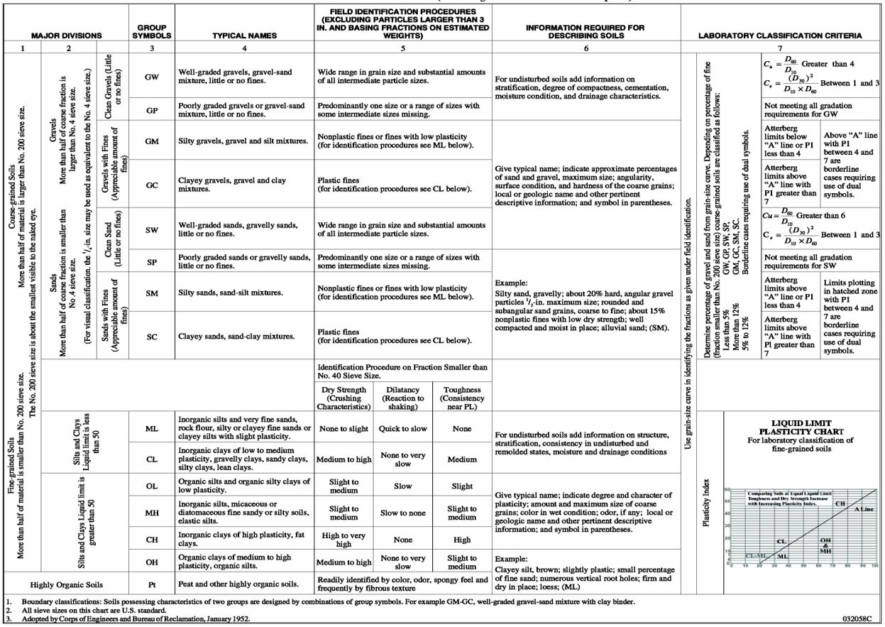
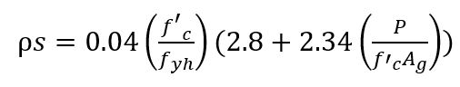
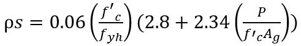
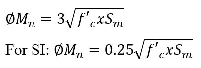
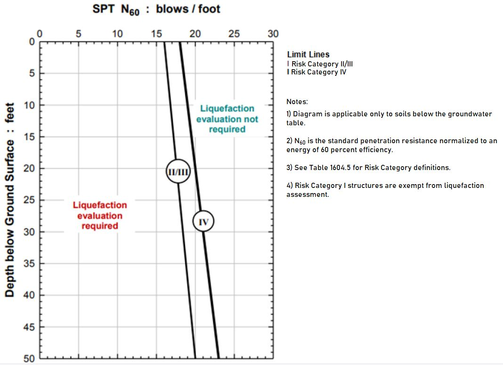

The provisions of this chapter shall apply to building and foundation systems in those areas not subject to scour or water pressure by wind and wave action. Buildings and foundations subject to such scour or water pressure loads shall be designed in accordance with Chapter 16 and Appendix G.
1801.2 Design.
Allowable bearing pressures, allowable stresses and design formulas provided in this chapter shall be used with the allowable stress design load combinations specified in Section 1605.3. The quality and design of materials used structurally in excavations and foundations shall comply with the requirements specified in Chapters 16, 19, 21, 22 and 23. Excavations and fills shall also comply with Chapter 33.
1801.2.1 Foundation design for seismic overturning.
Where foundations are proportioned using the load combinations of Sections 1605.2 or 1605.3.1 and the computation of seismic overturning effects is by equivalent lateral force or modal analysis, the proportioning shall be in accordance with Section 12.13.4 of ASCE 7.
Section BC 1802: Definitions
1802.1 General.
The following terms are defined in Chapter 2:
AUGERED-CAST-IN-PLACE PILES.
CAISSON PILES.
COMPACTED CONCRETE PILES.
COMPOSITE PILES.
CONCRETE-FILLED STEEL PIPE AND TUBE PILES.
DAMPPROOFING.
DEEP FOUNDATIONS.
DRILLED DISPLACEMENT PILES.
DRIVEN UNCASED PILES.
ENLARGED BASE PILES.
FIXED HEADED PILE (DEEP FOUNDATION).
FREE HEADED PILE.
GEOTECHNICAL CAPACITY OF DEEP FOUNDATIONS.
HELICAL PILES.
H-PILES.
LIQUEFACTION.
MICROPILE.
PERMANENT PRESTRESSED ROCK AND SOIL ANCHORS.
PIER FOUNDATION.
RETAINING WALL.
SHALLOW FOUNDATION.
UNDERPINNING.
WATERPROOFING.
Section BC 1803: Geotechnical Investigations and Material Classifications
1803.1 General.
Geotechnical investigations shall be subject to special inspections in accordance with Sections 1705.6, 1705.7 and 1705.19 and be conducted in accordance with Sections 1803.2 through 1803.7. An engineer shall scope, supervise and approve the subsurface investigation and the classification of the soil and rock encountered.
1803.2 Where required.
A geotechnical investigation shall be performed and report shall be prepared for:
1. New structures;
2. Horizontal enlargements;
3. Vertical enlargements or alterations necessitating new foundations or resulting in additional loading that exceeds 5 percent of the existing foundation design capacity; or
4. As required by the commissioner or applicant of record.
The geotechnical investigation shall be performed in accordance with Sections 1803.4 through 1803.6. For structures in Seismic Design Category C or D, the requirements of Sections 1803.2.1 and 1803.2.2 shall also apply.
1803.2.1 Seismic Design Category C.
For structures assigned to Seismic Design Category C in accordance with Section 1613, the geotechnical investigation shall include an evaluation of the following potential geologic and seismic hazards:
1. Slope instability.
2. Liquefaction. Peak ground accelerations for use in such analyses shall be determined in accordance with Section 1816.2.1.
3. Total and differential settlement.
4. Surface displacement due to faulting or seismically induced lateral spreading or lateral flow.
1803.2.2 Seismic Design Category D.
For structures assigned to Seismic Design Category D in accordance with Section 1613, the geotechnical investigation shall meet the requirements of Section 1803.2.1 and the following as applicable:
1. A determination of dynamic seismic lateral earth pressures on foundation walls and retaining walls supporting more than 6 feet (1828.8 mm) of in situ soil or backfill height due to design earthquake ground motions. Peak ground acceleration for use in lateral pressure analyses shall be determined in accordance with Section 1816.2.1.
2. The potential for liquefaction and soil strength loss evaluated for site peak ground acceleration, earthquake magnitude and source characteristics consistent with the maximum considered earthquake ground motions. Peak ground accelerations for use in such analyses shall be determined in accordance with Section 1816.2.1.
3. An assessment of potential consequences of liquefaction and soil strength loss including, but not limited to, the following:
3.1. Estimation of differential settlement.
3.2. Lateral soil movement.
3.3. Lateral soil loads on foundations.
3.4. Reduction in foundation soil-bearing capacity and lateral soil reaction
3.5. Soil downdrag and reduction in axial and lateral soil reaction for pile foundations.
3.6. Increases in soil lateral pressures on retaining walls.
3.7. Flotation of buried structures.
4. Discussion of mitigation measures such as, but not limited to, the following:
4.1. Selection of appropriate foundation type and depths.
4.2. Selection of appropriate structural systems to accommodate anticipated displacements and forces.
4.3. Ground stabilization.
4.4. Any combination of these measures and how they shall be considered in the design of the structure.
1802.3 Material classification.
Soil and rock classification shall be based on materials disclosed by borings, test pits or other subsurface exploration methods. Soil classifications shall be determined in accordance with ASTM D 2487 (refer to Table 1803.3) and the supplemental definitions contained herein. Rock classifications shall be determined in accordance with generally accepted engineering practice and the supplemental definitions contained herein. Laboratory tests shall be conducted to ascertain these classifications where deemed necessary by the engineer responsible for the geotechnical investigation or the commissioner.
BEDROCK.
1. Hard sound rock (Class 1a). Includes crystalline rocks, such as gneiss, granite, diabase and mica schist. Characteristics are as follows: the rock rings when struck with pick or bar; the rock does not disintegrate after exposure to air or water; the rock breaks with sharp fresh fracture; cracks are unweathered, less than 1/8-inch (3.2 mm) wide, and generally no closer than 3 feet (914.4 mm) apart; and the RQD (rock quality designation) with a double tube, NX-size diamond core barrel is generally 85 percent or greater for each 5-foot (1524 mm) run; or core recovery with BX-size core is generally 85 percent or greater for each 5-foot (1524 mm) run.
2. Medium hard rock (Class 1b). Includes crystalline rocks of paragraph 1 of this subdivision, plus marble and serpentinite. Characteristics are as follows: all those listed in paragraph 1 of this subdivision, except that cracks may be 1/4-inch (6.4 mm) wide and slightly weathered, generally spaced no closer than 2 feet (609.6 mm) apart; and the RQD with a double tube, NX-size diamond core barrel is generally between 50 and 85 percent for each 5-foot (1524 mm) run; or core recovery with BX-size core is generally 50 to 85 percent for each 5-foot (1524 mm) run.
3. Intermediate rock (Class 1c). Includes rocks described in paragraphs 1 and 2 of this subdivision, plus cemented shales and sandstone. Characteristics are as follows: the rock gives dull sound when struck with pick or bar; does not disintegrate after exposure to air or water; broken pieces may show moderately weathered surfaces; may contain fracture and moderately weathered zones up to 1 inch (25.4 mm) wide spaced as close as 1 foot (304.8 mm) apart; and the RQD with a double tube, NX-size diamond core barrel is generally 35 to 50 percent for each 5-foot (1524 mm) run; or a core recovery with BX-size core of generally 35 to 50 percent for each 5-foot (1524 mm) run.
4. Soft rock (Class 1d). Includes rocks described in paragraphs 1, 2, and 3 of this subdivision in highly weathered condition, plus talc schist and poorly cemented shales and sandstones. Characteristics are: rock may soften on exposure to air or water; may contain highly weathered zones up to 3 inches (76.2 mm) wide but filled with stiff soil; and either the RQD with a double tube, NX-size diamond core barrel is less than 35 percent for each 5-foot (1524 mm) run or core recovery with BX-size core of generally less than 35 percent for each 5-foot (1524 mm) run, or a value of N
60
greater than 50 blows per foot (0.3 meters).
SANDY GRAVEL AND GRAVELS. Consists of coarse-grained material with more than half of the coarse fraction larger than the #4 size sieve and contains little or no fines (GW and GP). The density of these materials shall be determined in accordance with the following:
Dense (Class 2a). These materials have a value of N
60
greater than 30 blows per 1 foot (0.3 meter).
Medium (Class 2b). These materials have a value of N
60
between 10 and 30 blows per 1 foot (0.3 meter).
Loose (Class 6). These materials have a value of N
60
less than 10 blows per 1 foot (0.3 meter). These materials shall be considered nominally unsatisfactory bearing materials.
GRANULAR SOILS. These materials are coarse-grained soils consisting of gravel and/or sand with appreciable amounts of fines and gravel. Soil types include GM, GC, SW, SP, SM and SC. The density of granular materials shall be determined in accordance with the following:
Dense (Class 3a). These materials have a value of N
60
greater than 30 blows per 1 foot (0.3 meter).
Medium (Class 3b). These materials have a value of N
60
between 10 and 30 blows per 1 foot (0.3 meter).
Loose (Class 6). These materials have a value of N
60
less than 10 blows per 1 foot (0.3 meter). These materials shall be considered nominally unsatisfactory bearing materials.
CLAYS. For soil types SC, CL and CH in the absence of sufficient laboratory data, the consistency of clay materials shall be determined in accordance with the following:
Hard (Class 4a). Clay requiring picking for removal, a fresh sample of which cannot be molded by pressure of the fingers; or having an unconfined compressive strength in excess of 4 TSF (383 kPa); or having a value of N
60
greater than 30 blows per 1 foot (0.3 meter).
Stiff (Class 4b). Clay that can be removed by spading, a fresh sample of which requires substantial pressure of the fingers to create an indentation; or having an unconfined compressive strength of between 1 TSF (95.8 kPa) and 4 TSF (383 kPa); or having a value of N
60
between 8 and 30 blows per 1 foot (0.3 meter).
Medium (Class 4c). Clay that can be removed by spading, a fresh sample of which can be molded by substantial pressure of the fingers; or having an unconfined compressive strength of between 0.5 TSF (47.9 kPa) and 1 TSF (95.8 kPa); or having a value of N
60
between 4 and 8 blows per 1 foot (0.3 meter).
Soft (Class 6). Clay, a fresh sample of which can be molded with slight pressure of the fingers; or having an unconfined compressive strength of less than 0.5 TSF (47.9 kPa); or having a value of N
60
less than 4 blows per 1 foot (0.3 meter). This material shall be considered nominally unsatisfactory bearing material.
SILTS AND CLAYEY SILTS. For soil types ML and MH in the absence of sufficient laboratory data, the consistency of silt materials shall be determined in accordance with the following:
Dense (Class 5a). Silt with a standard penetration test where the value of N
60
greater than 30 blows per 1 foot (0.3 meter).
Medium (Class 5b). Silt with a standard penetration test where the value of N
60
between 10 and 30 blows per 1 foot (0.3 meter).
Loose (Class 6). Silt with a standard penetration test where the value of N
60
fewer than 10 blows per 1 foot (0.3 meters). This material shall be considered nominally unsatisfactory bearing material.
Table 1803.3 Unified Soil Classification (Including Identification and Description)

(Am. L.L. 2023/077, 6/11/2023, eff. 6/11/2023)
Editor's note: For related unconsolidated provisions, see Appendix A at L.L. 2023/077.
1803.4 Investigation.
An engineer shall scope and supervise the geotechnical investigation. The geotechnical investigation shall be sufficient for evaluating soil and rock conditions including but not limited to material classification, stratigraphy, groundwater, slope stability, soil and rock strength, adequacy of load-bearing soils and rock, the effect of moisture variation on soil-bearing capacity, compressibility, liquefaction and expansiveness. The investigation shall comply with Sections 1803.4.1 through 1803.4.4.
1803.4.1 Scope of investigation.
The scope of the geotechnical investigation, including the number, types and depths of borings, the number of test pits or the number of alternative test methods; the equipment used to drill and sample; the in-situ testing; and the laboratory testing program shall be determined by the engineer responsible for the investigation, subject to the requirements of this chapter.
1. Borings shall be uniformly distributed under the structure or distributed in accordance with load patterns imposed by the structure.
2. At a minimum, investigations for structures shall include:
2.1. one exploratory boring for built-over areas up to and including 750 square feet (69.7 m
2
)
2.2. two exploratory borings for built-over areas greater than 750 square feet (69.7 m
2
) but less than 5,000 square feet (464.5 m
2
), and at least one additional boring for each additional 2,500 square feet (232.3 m
2
), or part thereof, of built-over areas up to 20,000 square feet (1858.1 m
2
).
2.3. at least one boring for each additional 5,000 square feet (464.5 m
2
), or part thereof, of built-over areas in excess of 20,000 square feet (1858.1 m
2
).
3. At a minimum, investigations for retaining walls greater than 10 feet (3048 mm) in height shall include one exploratory boring for every 50 linear feet (15 204 mm) of wall.
4. Borings shall be taken into bedrock, or to an adequate depth below the top of the load-bearing strata to demonstrate that the foundation loads have been sufficiently dissipated and to evaluate global stability of retaining walls.
5. For structures having an average area load (dead plus live) of 1,000 pounds per square foot (47.9 kN/m
2
) or more, at least one boring for every 10,000 square feet (929 m
2
) of footprint area shall penetrate at least 100 feet (30 480 mm) below the curb grade or 5 feet (1524 mm) into bedrock of Class 1c or better, whichever is less.
6. At least one-half of the borings satisfying this requirement shall be located within the limits of the built-up area and the remainder shall be within 25 feet (7620 mm) of the built-up area limits.
7. For structures to be supported on deep foundations, the required number of borings shall be not less than two borings, and based on a minimum of one boring per 2,000 square feet (184.8 m
2
) for the first 20,000 square feet (1858.1 m
2
) and one boring per every additional 4,000 square feet (371.6 m
2
).
8. All boring, sampling, and in-situ testing operations shall be subject to special inspection in accordance with Table 1705.6.
Exception: Test pits may be substituted for borings for one and two-story structures. The registered design professional shall submit a test pit observation report to the commissioner.
1803.4.2 Existing data.
Suitable borings, test pits, probings, and the logs and records that were obtained as part of earlier exploration programs by an engineer other than the engineer performing the geotechnical investigation and that meet the requirements of this section may only be used as partial fulfillment of the requirements of Section 1803.4.1. Additional boring(s) shall be made to fulfill the requirements of Section 1803.4.1, with a minimum of one additional boring required.
1803.4.3 Groundwater table.
The geotechnical investigation shall determine the existing groundwater table.
1803.4.4 Compressible soils.
In areas containing compressible soils, the geotechnical investigation shall determine the extent of these soils in the plan area of the structure and shall be subject to the requirements of Section 1803.3.
1803.5 Soil and rock sampling.
The soil boring and sampling procedures and apparatus shall be in accordance with ASTM D 1586 and ASTM D 1587 and generally accepted engineering practice. The rock coring, sampling procedure and apparatus shall be in accordance with ASTM D 2113 and generally accepted engineering practice. Rock cores shall be obtained with a double-tube core barrel with a minimum outside diameter of 2 7/8 inches (73 mm). With the approval of the engineer responsible for the geotechnical investigation, smaller-diameter double-tube core barrels may be used under special circumstances such as telescoping casing to penetrate boulders, or space limitations requiring the use of drill rigs incapable of obtaining large-diameter cores.
1803.5.1 Bedrock support.
Where the foundation design relies on rock to support footings, deep foundations or caisson sockets, or permanent prestressed rock anchors, a sufficient number of rock corings shall be drilled to sufficient depths to assess the competency of the rock and its load-bearing capacity, but no less than 10 feet (3048 mm) below the lowest level of bearing.
1803.5.2 Alternative investigative methods.
The engineer responsible for the geotechnical investigation may engage specialized technicians to conduct alternative investigative methods such as cone penetrometer testing (CPT) performed in accordance with ASTM D 3441 or ASTM D 5778. Data from these investigations may be used to (i) supplement soil boring and rock coring information, provided there is a demonstrated correlation between the findings, and (ii) determine material properties for static and seismic or liquefaction analyses. CPTs may replace borings on a one to one basis, but in no case shall there be fewer than half the required standard borings as per Section 1803.4.1, and no less than two standard borings. The boring depth requirements of Section 1803.4.1 shall be accomplished with borings. The alternative investigative methods must be capable of extending to the depths of the required borings. Other in-situ testing methods, such as geophysical, vane shear, and pressure meter, may be used to determine engineering design parameters, but may not be used as a substitute for the required number of borings.
1803.5.3 Material disposition.
Soil and rock samples shall be maintained in an accessible location by the permit holder or owner and made available to the engineer responsible for the geotechnical investigation and to the department, until the foundation work has been completed and accepted, or until 1 year after the investigation is complete, whichever is longer.
1803.6 Geotechnical reports.
A geotechnical engineering report shall be prepared for all sites and submitted to the commissioner.
Exception: One- and two-family dwellings no more than three stories in height shall not require a geotechnical report except where any of the following exist:
1. Shallow foundations are used that bear on or above compressible soils (see Section 1803.4.4), uncontrolled fill (see Section 1806.2.3), or artificially treated soils (see Section 1806.2.4);
2. Underpinning is required;
3. The structure is within the special flood hazard area;
4. Dewatering is required;
5. Test pits are implemented in lieu of borings as per Section 1803.4.1; or
6. As required by the commissioner.
1803.6.1 Information required in geotechnical reports.
The geotechnical report shall be prepared by the engineer responsible for the geotechnical investigation and shall be signed and sealed. The geotechnical report submitted to the commissioner shall include the foundation system shown on the drawings submitted to the department. The report shall include, but need not be limited to, the following information:
1. A description of the planned structure.
2. A plot showing the location of test borings, excavations, probes, and/or other exploration techniques.
3. A complete record of the soil and/or rock sample descriptions.
4. A record of the soil and/or rock profile.
5. Elevation of the groundwater table (if encountered), base flood elevation (if applicable), and design flood elevation.
6. Results of in-situ or geophysical testing.
7. Results of laboratory testing.
8. Recommendations for foundation type and design criteria, including but not limited to allowable bearing capacity of natural or compacted soil and/or rock; soil stiffness parameters required for design of the foundations; mitigation of the effects of liquefaction (if applicable); site class; Mapped MCE
R
spectral acceleration parameters (S
S
and S
1
); design spectral response acceleration parameters (S
DS
and S
D1
); site adjusted peak ground acceleration (PGA
M
); differential settlement and varying soil and/or rock strength; and the effects of adjacent loads.
9. Design lateral earth pressures on foundation walls and other retaining walls.
10. Recommendations for the evaluation of adjacent properties potentially impacted by the proposed construction.
11. Where dewatering is required, recommendations for the maximum permissible drawdown outside the site.
12. Expected total and differential settlement.
13. Special design and construction provisions for footings or foundations founded on expansive soils, as necessary.
14. Compacted fill material properties and testing in accordance with Section 1804.6.
15. Controlled low-strength material properties and testing in accordance with Section 1804.7.
16. A list of anticipated special inspections required for construction of earthwork and foundations.
17. For deep foundations reports, the requirements outlined in Section 1810.2.2.
18. For permanent prestressed rock and soil anchor reports, the requirements outlined in Section 1815.2.
19. Soil and rock parameters to be used to determine the safe slope of temporary excavations pursuant to Section 3304.4.1.
1803.7 Construction documents.
Construction documents shall be prepared in accordance with Section 107.7.1.
(Am. L.L. 2023/077, 6/11/2023, eff. 6/11/2023)
Editor's note: For related unconsolidated provisions, see Appendix A at L.L. 2023/077.
Section BC 1804: Excavation, Grading and Fill
1804.1 Excavations near foundations.
Excavations for any purpose shall not reduce vertical or lateral support for any foundation without first evaluating if underpinning or protecting the foundation against detrimental lateral or vertical movement, or both, is required. Where required, underpinning or shoring shall be provided in accordance with Section 1817.
1804.2 Placement of backfill.
The excavation outside the foundation shall be backfilled with soil that is free of organic material, construction debris, or boulders. A controlled low-strength material (CLSM) can be used as backfill in lieu of soil. Soil backfill shall be placed in lifts and compacted in a manner that does not damage the foundation or the waterproofing or dampproofing material.
Exception: Controlled low-strength material need not be compacted.
1804.3 Surcharge.
No fill or other surcharge loads shall be placed adjacent to any building or structure unless such building or structure is capable of withstanding the additional loads caused by the fill or the surcharge.
Exception: Grading for landscaping purposes shall be permitted where done with walk-behind equipment where the grade is not increased more than one foot (304.8 mm) from original design grade, or where approved by the commissioner.
1804.4 Site grading.
The ground immediately adjacent to the foundation shall be sloped away from the structure as needed, or an approved alternate method of diverting water away from the foundation shall be used, where surface water would detrimentally affect the foundation material (soil and/or rock). Grading shall not be detrimental to the bearing material of adjacent structures. Site grading shall also comply with Section 1101.11 of the New York City Plumbing Code.
1804.4.1 Seepage.
In an excavation where soil and groundwater conditions are such that an inward or upward seepage might be produced in materials intended to provide vertical or lateral support for foundation elements or for adjacent foundations, excavating methods shall control or prevent the inflow of ground water to prevent disturbance of the soil material in the excavation or beneath existing buildings. No foundation shall be placed on soil that has been disturbed by seepage unless remedial measures have been taken.
1804.5 Grading and filling in flood hazard areas.
Grading and/or filling in areas of special flood hazard shall not be permitted except as permitted in Appendix G.
1804.6 Compacted fill material.
Where foundations will bear on compacted fill material, the compacted fill shall comply with the provisions of a geotechnical report prepared, signed and sealed by the engineer, which shall contain the following:
1. Specifications for the preparation of the site prior to placement of compacted fill material.
2. Specifications for material to be used as compacted fill.
3. Test method(s) to be used to determine the maximum dry density and optimum moisture content of the material to be used as compacted fill.
4. Maximum allowable thickness of each lift of compacted fill material.
5. Field test method(s) for determining the in-place dry density of the compacted fill.
6. Minimum acceptable in-place dry density expressed as a percentage of the maximum dry density determined in accordance with Item 3.
7. Number and frequency of field tests required to determine compliance with Item 6.
8. Acceptable types of compaction equipment for the specified fill materials.
1804.7 Controlled low-strength material (CLSM).
Where footings will bear on controlled low-strength material (CLSM), the CLSM shall comply with the provisions of a geotechnical report prepared, signed and sealed by the engineer, which shall contain the following:
1. Specifications for the preparation of the site prior to placement of the CLSM.
2. Specifications for the CLSM.
3. Laboratory or field test method(s) to be used to determine the compressive strength or bearing capacity of the CLSM.
4. Test methods for determining the acceptance of the CLSM in the field.
5. Number and frequency of field tests required to determine compliance with Item 4.
Section BC 1805: Dampproofing and Waterproofing
1805.1 Where required.
Walls or portions thereof that retain soil or rock and enclose interior spaces and floors below grade shall be waterproofed or dampproofed in accordance with this section, with the exception of those spaces containing occupancy groups other than residential and institutional where such omission is not detrimental to the building or occupancy. Ventilation for crawl spaces shall comply with Section 1203.3.
1805.1.1 Flood hazard areas.
Buildings and structures in areas of special flood hazard shall comply with Appendix G.
1805.2 Dampproofing required.
Where hydrostatic pressure will not occur as determined by Section 1803, floors and walls for other than wood foundation systems shall be dampproofed in accordance with this section. Wood foundation systems shall be constructed in accordance with AWC TR7.
1805.2.1 Floors.
Dampproofing materials for floors shall be installed between: (i) the floor and (ii) the base course required by Section 1805.4.1 or the sub-floor. Subgrade for the dampproofing material shall be prepared in accordance with manufacturer's recommendations. Dampproofing material shall be installed in accordance with manufacturer's recommendations and protected after placement. Any damaged areas and punctures must be repaired prior to placement of slab. All penetrations shall be sealed as per manufacturer's recommendations.
1805.2.2 Walls.
Dampproofing materials for walls shall be installed on the exterior surface of the wall, and shall extend from the top of the footing to above ground level as determined by the registered design professional and shall be installed in accordance with manufacturer's recommendations. Dampproofing at walls shall overlap or extend past the slab dampproofing such that there are no gaps or breaches in the dampproofing system.
1805.3 Waterproofing required.
Where the geotechnical investigation required by Section 1803 indicates that a hydrostatic pressure condition exists, walls and floors shall be waterproofed in accordance with this section.
1805.3.1 Floors.
Floors required to be waterproofed shall be designed and constructed to withstand the hydrostatic pressures to which the floors will be subjected. Waterproofing shall be accomplished by creating a continuous water seal below the floor using appropriate waterproofing materials. Joints, penetrations and other interruptions shall be sealed in accordance with manufacturer's recommendations. Floor waterproofing must be transitioned to accomplish a complete tie-in with the foundation wall waterproofing.
1805.3.2 Walls.
Walls required to be waterproofed shall be designed and constructed to withstand the hydrostatic pressures and other lateral loads to which the walls will be subjected. Waterproofing shall be applied from the bottom of the wall to not less than 12 inches (304.8 mm) above the maximum elevation of the groundwater table or as directed by the registered design professional. The remainder of the wall shall be dampproofed in accordance with Section 1805.2.2. Joints, penetrations and other interruptions shall be sealed in accordance with manufacturer's recommendations.
1805.3.3 Joints and penetrations.
Joints in or between walls and floors, and penetrations of walls and floors shall be sealed utilizing methods and materials approved by the registered design professional. Joints, penetrations and other interruptions shall be sealed in accordance with the manufacturer's recommendations.
1805.4 Subsoil drainage system.
Where it is determined that there is a potential for infiltration or seepage, a subsoil drainage system shall be permitted to be used to control this inflow, provided that:
1. The below ground space is waterproofed or dampproofed per Sections 1805.2 and 1805.3; and
2. The estimated discharge from the drainage system is less than or equal to the amount allowed by the agency having jurisdiction.
1805.4.1 Drainage course.
A drainage course shall consist of washed gravel, crushed natural stone or other suitable drainage medium acceptable to the engineer. Recycled concrete aggregate is not acceptable for use in a drainage course where a subsoil drainage system is used.
1805.4.2 Foundation drain.
A foundation drain shall be installed where required by the registered design professional. The foundation drain, including layout, materials, and cleanouts, shall be designed by the registered design professional.
1805.4.3 Drainage discharge.
The drainage course and foundation drain shall discharge by gravity or mechanical means into an approved drainage system that complies with the New York City Plumbing Code and any other laws or requirements of agencies having jurisdiction.
1805.5 In situ walls.
In situ walls (such as slurry walls, tangent pile walls, and secant pile walls) with joints sealed by grouting or other methods acceptable to the engineer shall not require waterproofing or dampproofing unless required by the engineer.
Section BC 1806: Allowable Load-bearing Values of Soils and Rock
1806.1 Design.
The allowable bearing pressures provided in Table 1806.1 shall be used with the allowable stress design load combinations specified in Section 1605.3.
Table 1806.1 Allowable Bearing Pressures
Class of Materials (Notes 1 and 3)
Maximum Allowable Bearing Pressure (TSF)
MaximumAllowable Bearing Pressure (kPa)
Class of Materials (Notes 1 and 3)
Maximum Allowable Bearing Pressure (TSF)
MaximumAllowable Bearing Pressure (kPa)
1. Bedrock (Notes 2 and 7)
1.a Hard sound rock
60
5,746
1.b Medium rock
40
3,830
1.c Intermediate rock
20
1,915
1.d Soft rock
8
766
2. Sandy gravel and gravel (GW, GP) (Notes 4, 8, and 9)
2.a Dense
10
958
2.b Medium
6
575
3. Granular soils (GC, GM, SW, SP,SM, and SC) (Notes 4, 5, 8, and 9)
3.a Dense
6
575
3.b Medium
3
287
4. Clays (SC, CL, and CH) (Notes 4, 6, 8,and 9)
4.a Hard
5
479
4.b Stiff
3
287
4.c Medium
2
192
5. Silts and silty soils (ML and MH) (Notes 4, 8, and 9)
5.a Dense
3
287
5.b Medium
1.5
144
6. Nominally Unsatisfactory Bearing Materials:
Loose granular soils
Soft clay soils
Loose Silt
All organic silts, organic clays, peats, soft clays, granular soils and varved silts
See 1806.2.1
See 1806.2.1
7. Controlled and uncontrolled fills.
See 1806.2.2 or 1806.2.3
See 1806.2.2 or 1806.2.3
Notes:
1. Where there is doubt as to the applicable classification of a soil or rock stratum, the allowable bearing pressure applicable to the lower class of material to which the given stratum might conform shall apply.
2. The tabulated values of allowable bearing pressures apply only for massive rocks, or for sedimentary or foliated rocks where the strata are level or nearly so, and then only if the area has ample lateral support. The allowable bearing pressure for tilted strata and their relation to nearby slopes or excavations shall be evaluated by the engineer responsible for the geotechnical investigation. The tabulated values for Class 1a materials (hard sound rock) may be increased by 25 percent provided the engineer performs additional tests and/or analyses substantiating the increase.
3. For intermediate conditions, values of allowable bearing pressure shall be estimated by interpolation between indicated extremes.
4. Footing embedment in soils shall be in accordance with Section 1809.3 and the width of the loaded area shall not be less than 18 inches (457.2 mm), unless analysis demonstrates that the proposed construction will have a minimum factor of safety of 2.0 against shear failure of the soil.
5. Estimates of settlements shall govern the allowable bearing pressure, subject to the maximums given in this table, and as provided in Section 1806.2.
6. Allowable bearing pressure of clay soils shall be established on the basis of the strength of such soils as determined by field or laboratory tests and shall provide a factor of safety against failure of the soil of not less than 2.0 computed on the basis of a recognized procedure of soils analysis, shall account for probable settlements of the building and shall not exceed the tabulated maximum values.
7. Allowable bearing pressure may be increased due to embedment of the foundation. The allowable bearing pressure for intermediate rock (1c), medium hard rock (1b), and hard sound rock (1a) shall apply where the loaded area is on the rock surface. Where the loaded area is below the rock surface and is fully confined by the adjacent rock mass and provided that the adjacent rock mass above the bearing surface is of rock class 1c or better, and the rock mass has not been shattered by blasting or otherwise is or has been rendered unsound, the allowable bearing pressure may be increased 10 percent of the base value for each 1 foot (0.3 meters) of embedment below the surface of the adjacent rock surface in excess of 1 foot (0.3 meters), but shall not exceed 200 percent of the values.
8. The allowable bearing pressure for soils of Classes 2, 3, 4, and 5 determined in accordance with Notes 3, 4, and 5 above, shall apply where the loaded area is embedded 4 feet (1220 mm) or less in the bearing stratum. Where the loaded area is embedded more than 4 feet (1220 mm) below the adjacent surface of the bearing stratum, and is fully confined by the weight of the adjacent soil, the allowable bearing pressure may be increased 5 percent of the base value for each 1-foot (304.8 mm) additional embedment, but shall not exceed twice the values. Increases in allowable bearing pressure due to embedment shall not apply to soft rock, clays, silts and soils of Classes 6 and 7.
9. The allowable bearing pressure for soils of Classes 2, 3, 4, and 5 determined in accordance with this table and the notes thereto, may be increased up to 1/3 where the density of the bearing stratum below the bottom of the footings increases with depth and is not underlain by materials of a lower allowable bearing pressure. Such allowable bearing pressure shall be demonstrated by a recognized means of analysis that the probable settlement of the foundation due to compression, and/or consolidation does not exceed acceptable limits for the proposed building.
10. The maximum toe pressure for eccentrically loaded footings may exceed the allowable bearing pressure by up to 25 percent if it is demonstrated that the heel of the footing is not subjected to tension.
1806.2 Allowable bearing pressure.
The allowable bearing pressure for supporting soil and rock shall not exceed the values specified in Table 1806.1, unless data to substantiate the use of a higher value are developed and contained in the engineer's geotechnical report, and the commissioner approves such value. Allowable bearing pressure shall be considered to be the pressure at the base of a foundation in excess of the effective stress existing at the same level prior to construction operations.
Organic silts, organic clays, peats, soft clays, loose granular soils, loose silts, and varved silts shall be considered nominally unsatisfactory bearing material. The allowable bearing pressure shall be determined independently of Table 1806.1 subject to the following:
1. For varved silts, the soil bearing pressure produced by the proposed building shall not exceed 2 tons per square foot (191.5 kPa), except that for desiccated or over consolidated soils, higher bearing pressures are allowed subject to approval by the commissioner.
2. For organic silts or clays, peats, soft clays, loose granular soils, or loose silts, the engineer responsible for the geotechnical investigation shall establish the allowable soil bearing pressure based upon the soil's specific engineering properties. This may require that the soils be preconsolidated, artificially treated or compacted.
3. A report prepared, signed and sealed by the engineer is required to be filed with the department to substantiate the design soil pressures to be used on soil materials and shall contain, at a minimum:
3.1. Sufficient laboratory test data on the compressible material to indicate the soil strength and the preconsolidation pressure, coefficient of consolidation, coefficient of compressibility, permeability, secondary compression characteristics, and Atterberg limits.
3.2. Where the design contemplates improvement of the natural bearing capacity and/or reduction in settlements by virtue of preloading, cross sections showing the amount of fill and surcharge to be placed, design details showing the required time for surcharging, and computations showing the amount of settlement to be expected during surcharging and the estimated amount and rate of settlement expected to occur after the structure has been completed, including the influence of dead and live loads of the structure.
3.3. A detailed analysis showing that the anticipated future settlement will not adversely affect the performance of the structure
3.4. Where strip drains, sand drains, or stone columns are to be used, computations showing the diameter, spacing, and anticipated method of installation of such drains.
3.5. Records of settlement plate elevations and pore pressure readings, before, during, and after surcharging.
1806.2.2 Controlled fills.
Fills shall be considered as satisfactory bearing material of the applicable class when placed in accordance with the following procedures and subject to the special inspection provisions of Chapter 17:
1. Area to be filled shall be stripped of all organic materials, rubbish and debris.
2. Fill shall not be placed when frozen or on frozen or saturated subgrade.
3. The special inspection agency shall approve the subgrade prior to fill placement.
4. Fill material shall consist of gravel, crushed rock, recycled concrete aggregate, well-graded sand or a mixture of these, or equivalent materials with a maximum particle size of 3 inches (76.2) and a maximum of 10 percent passing the #200 sieve.
5. Fill shall be placed and compacted in lifts, not exceeding 12 inches (304.8 mm), at its optimum moisture content, plus or minus 2 percent, and to not less than a density of 95 percent of the optimum density as determined by ASTM D 1557.
6. Fill density shall be verified by in-place tests made on each lift.
1806.2.2.1 Allowable bearing pressure of controlled fills.
Provided the capacity of the underlying soil is not exceeded, the allowable bearing pressure of controlled fill shall be limited to:
1. 6 tons per square foot ((574.6 kPa) for gravel and crushed rock.
2. 3 tons per square foot (287.3 kPa) for recycled concrete aggregate and well-graded sand.
1806.2.3 Uncontrolled fills.
Fills other than controlled fill may be considered as satisfactory bearing material of applicable class, subject to the following:
1. Where spread footings will be used, the soil within the built-up area shall be explored using test pits at every column. All test pits shall extend to depths equal to the smaller width of the footing and at least one test pit shall penetrate at least 8 feet (2438.4 mm) below the level of the bottom of the proposed footings. All test pits shall be backfilled with properly compacted fill. Borings may be used in lieu of test pits, provided that continuous samples of at least 3 inches (76.2 mm) in diameter are recovered. Where mat foundations will be used, one test pit or minimum 3 inch (76.2 mm) diameter sampler boring shall be provided for every 1,000 square feet (92.9 m
2
) of building footprint area. For continuous concrete footings, one test pit or minimum 3 inch (76.2 mm) diameter sampler boring shall be provided for every 25 linear feet (7620 mm).
2. The building area shall be additionally explored using one standard boring for every 2,500 square foot (232.3 m
2
) of building footprint area. These borings shall be carried to a depth sufficient to penetrate into natural ground, but not less than 20 feet (6096 mm) below grade.
3. The fill shall be composed of material that is free of voids and free of extensive inclusions of mud and organic materials such as paper, wood, garbage, cans, or metallic objects and debris.
4. The allowable soil bearing pressure on satisfactory uncontrolled fill material shall not exceed 2 tons per square foot (191.5 kPa). One and two-family dwellings may be founded on satisfactory uncontrolled fill provided the dwelling site has been explored using at least one test pit, penetrating at least 8 feet (2438.4 mm) below the level of the bottom of the proposed footings, and the fill has been found to be composed of material that is free of voids and generally free of mud and organic materials, such as paper, garbage, cans, or metallic objects, and debris. Test pits shall be backfilled with properly compacted fill.
1806.2.4 Artificially treated soils.
Nominally unsatisfactory soil materials that are artificially compacted, cemented, or preconsolidated may be used for the support of buildings, and nominally satisfactory soil materials that are similarly treated may be used to resist soil bearing pressures in excess of those indicated in Table 1806.1. The engineer shall develop treatment plans and procedures and post-treatment performance and testing requirements, and submit such plans, procedures, and requirements to the commissioner for approval. After treatment, a sufficient amount of sampling and/or in-situ tests shall be performed in the treated soil to demonstrate the efficacy of the treatment for the increased bearing pressure.
Section BC 1807: Retaining Walls and Other Retaining Structures
1807.1 General.
Retaining walls shall be designed in accordance with Section 1807.2.
1807.2 Design.
Retaining walls shall be designed to ensure stability against overturning, sliding, excessive foundation pressure and the effects of water pressure, including uplift. Where a keyway is extended below the wall base with the intent to engage passive pressure and enhance sliding stability, lateral soil pressures on both sides of the keyway shall be considered in the sliding analysis.
1807.2.1 Design lateral soil loads.
Retaining walls shall be designed for the lateral soil loads set forth in Section 1605.
Exception: Where the structural design of a retaining wall is based on load factor design, the load factors in Section 1605.2 may be modified as follows: where water can freely flow over the top of the wall, the wall may be designed for a water pressure equal to that caused by a groundwater table elevation at the top of the wall. For this condition, the load factor for the groundwater pressure may be reduced to 1.2. The load factor for the lateral earth pressure shall remain at 1.6.
1807.2.2 Safety factor.
Retaining walls shall be designed to resist the lateral action of soil to produce sliding and overturning with a minimum safety factor of 1.5 in each case. The load combinations of Section 1605 shall not apply to this requirement. Instead, design shall be based on 0.7 times nominal earthquake loads, 1.0 times other nominal loads, and investigation with one or more of the variable loads set to zero. The safety factor against lateral sliding shall be taken as the available soil resistance at the base of the retaining wall foundation divided by the net lateral force applied to the retaining wall.
Exception: Where earthquake loads are included, the minimum safety factor for retaining wall sliding and overturning shall be 1.1.
1807.3 Temporary retaining structures.
Structural members for temporary retaining structures may be designed with a 20 percent increase in the allowable bending stress only.
Section BC 1808: Reserved
Section BC 1809: Shallow Foundations
1809.1 General.
Shallow foundations shall be designed and constructed in accordance with Sections 1809.1 through 1809.6. Shallow foundations shall be constructed on suitable bearing materials established in accordance with the requirements of Sections 1804 and 1806.
1809.2 Stepped footings.
The top surface of footings shall be level. The bottom surface of footings shall be permitted to have a slope not exceeding one unit vertical in 10 units horizontal (10-percent slope). Footings shall be stepped where necessary to change the elevation of the top surface of the footing or where the surface of the ground slopes more than one unit vertical in 10 units horizontal (10-percent slope).
1809.3 Depth of footings.
The minimum depth of shallow foundations below the undisturbed ground surface shall be 12 inches (304.8 mm). Where applicable, the depth of shallow foundations shall also conform to Section 1809.3.1.
1809.3.1 Frost protection.
Except where otherwise protected from frost, shallow foundations, pile caps, and other permanent supports of buildings and structures shall be protected from frost by one or more of the following methods:
1. Extending a minimum of 4 feet (1220 mm) below the lowest adjacent permanent exposed grade;
Exception: Grade beams shall be embedded a minimum of 18 inches (457.2 mm) below the lowest adjacent permanent exposed grade.
2. Constructing in accordance with ASCE 32; or
3. Erecting on solid rock.
Exception: Free-standing buildings meeting all of the following conditions shall not be required to be frost protected:
1. Classified in Structural Occupancy Category I (see Table 1604.5);
2. Area of 400 square feet (37.1 m
2
) or less; and
3. Eave height of 10 feet (3048 mm) or less.
1809.3.2 Foundations on frozen soil.
Shallow foundations shall not bear on frozen soil.
Exception: Temporary structures may bear on frozen soil if the soil is maintained in a frozen condition throughout the service life of the temporary structures being supported. The method of maintaining the soil in a frozen condition shall be approved by the commissioner.
1809.4 Shallow foundations at different levels.
Where shallow foundations are supported at different levels, or are at different levels from the shallow foundations of adjacent structures, the influence of the pressures under the higher foundation on the stability of the lower foundations shall be considered in the design. The design shall consider the requirements for lateral support of the material supporting the higher foundation, the additional load imposed on the lower foundations, and assessment of the effects of dragdown on deep foundations supporting adjacent buildings or compression of soils supporting adjacent buildings.
1809.5 Shallow foundations.
Shallow foundations shall be designed and constructed in accordance with Sections 1809.5.1 through 1809.5.8.
1809.5.1 Design.
Shallow foundations shall be designed so that the allowable bearing capacity of the soil is not exceeded, and that differential settlements are within the allowable limits for the structure. The minimum width of shallow foundations shall be 18 inches (457.2 mm).
1809.5.1.1 Design loads.
Shallow foundations shall be designed for the most unfavorable effects due to the combinations of loads specified in Section 1605.3. The dead load shall include the weight of shallow foundations and overlying fill. Reduced live loads, as specified in Section 1607.11, are permitted to be used in the design of shallow foundations.
1809.5.1.2 Vibratory loads.
Where machinery operations or other vibrations are transmitted through the shallow foundations, consideration shall be given in the shallow foundation design to prevent detrimental disturbances of the soil.
1809.5.1.3 Shifting or moving soils.
When the possibility of shifting or moving soil exists, the short and long term impact of such soils shall be considered in the design of shallow foundations.
1809.5.2 Concrete shallow foundations.
The design, materials and construction of concrete shallow foundations shall comply with Sections 1809.5.2.1 through 1809.5.2.5 and the provisions of Chapter 19.
1809.5.2.1 Concrete strength.
Concrete in shallow foundations shall have a specified compressive strength (f'c
) of not less than 2,500 pounds per square inch (psi) (17.24 MPa) at 28 days.
1809.5.2.2 Footing seismic ties.
Where a structure is assigned to Seismic Design Category D in accordance with Section 1613, individual spread footings founded on soil defined in Section 1613.3.2 as Site Class E or F shall be interconnected by ties. Ties shall be capable of carrying, in tension or compression, a force equal to the product of the larger footing load times the seismic coefficient SDS divided by 10 unless it is demonstrated that equivalent restraint is provided by reinforced concrete beams within slabs on grade or reinforced concrete slabs on grade.
1809.5.2.3 Plain concrete footings.
The thickness of plain concrete footings supporting walls of other than light-frame construction shall not be less than 8 inches (203.2 mm) where placed on soil.
Exception: For plain concrete footings supporting Group R-3 occupancies, the thickness is permitted to be 6 inches (152.4 mm), provided that the footing does not extend beyond a distance greater than the thickness of the footing on either side of the supported wall.
1809.5.2.4 Placement of concrete.
Concrete shallow foundations shall not be placed through water unless a tremie or other method approved by the commissioner is used. Where placed under or in the presence of water, the concrete shall be deposited by approved means to ensure minimum segregation of the mix and negligible turbulence of the water.
1809.5.2.5 Protection of concrete.
No shallow foundation shall be placed on frozen soils unless the soils are maintained in frozen condition throughout the service life of the structure being supported. No foundation shall be placed in freezing weather unless provision is made to maintain the underlying soil free of frost. Concrete shallow foundations shall be protected from freezing during depositing and for a period of not less than five days thereafter. Water shall not be allowed to flow through the deposited concrete.
1809.5.3 Masonry-unit footings.
The design, materials and construction of masonry-unit footings shall comply with the provisions of Chapter 21.
1809.5.4 Steel grillage footings.
Grillage footings of structural steel elements shall be separated with approved steel spacers and be entirely encased in concrete with at least 6 inches (152.4 mm) on the bottom and at least 4 inches (101.6 mm) at all other points. The spaces between the elements shall be completely filled with concrete or cement grout.
1809.5.5 Timber footings.
Refer to Chapter 23.
1809.5.6 Wood foundations.
Refer to Chapter 23.
1809.5.7 Pier foundations.
The design, materials, and construction of pier foundations shall conform to the requirements of Sections 1809.5.2, 1809.5.3, and 1809.5.7.1 through 1809.5.7.6.
Exception: Piers shall be load tested as a deep foundation in accordance with the applicable portions of Section 1810 when the bearing stratum is not physically available for inspection during construction as required by Chapter 17.
1809.5.7.1 Dimensions and height.
The minimum horizontal dimension of piers shall be 2 feet (609.6 mm), and the height shall not exceed 12 times the least horizontal dimension.
1809.5.7.2 Concrete design.
Where adequate lateral support is furnished by the surrounding materials defined in Section 1810.7 of this code, piers may be constructed of plain or reinforced concrete and the requirements of ACI 318 shall apply.
Exception: Where adequate lateral support is not provided, and the ratio of unsupported height to least horizontal dimension does not exceed three, piers of plain concrete shall be designed and constructed as pedestals in accordance with ACI 318. Where the unsupported height to least horizontal dimension exceeds three, piers shall be constructed of reinforced concrete, and shall conform to the requirements for columns in ACI 318.
1809.5.7.3 Reinforcement placement.
Reinforcement shall be tied and placed as a unit in the pier prior to placement of concrete.
Exception: Steel dowels embedded 5 feet (1524 mm) or less in the pier may be placed individually. Reinforcement is permitted to be wet set and the concrete cover that is otherwise required to measure a minimum of 2 1/2 inches (63.5 mm) may be reduced to 2 inches (50.8 mm) for Groups R-3 and U occupancies not exceeding two stories of light-frame construction, provided the construction method is approved by the commissioner.
1809.5.7.4 Concrete placement.
Concrete shall be placed in such a manner as to ensure the exclusion of any foreign matter and to fill the full lateral dimensions of each pier. Concrete shall not be placed through water except where a tremie or other approved method is used. When depositing concrete from the top of the pier, the concrete shall not be chuted directly into the pier but shall be poured in a rapid and continuous operation through a funnel hopper centered at the top of the pier.
1809.5.7.5 Steel shell.
Where concrete piers are entirely encased within a circular steel shell, and the area of the shell steel is considered reinforcing steel, the steel shall be protected under the conditions specified in Section 1810.2.12. Horizontal joints in the shell shall be spliced to comply with Section 1810.2.11.
1809.5.7.6 Dewatering.
Where piers are carried to depths below the groundwater level, the piers shall be constructed by a method that will provide accurate preparation and inspection of the subgrade in dry conditions.
1809.5.8 Foundation walls.
Concrete and masonry foundation walls shall be designed in accordance with Chapter 19 or 21, respectively.
1809.5.8.1 Foundation wall thickness.
The minimum thickness of concrete and masonry foundation walls shall comply with Section 1809.5.8.1.1.
1809.5.8.1.1 Thickness based on walls supported.
The thickness of foundation walls shall not be less than the thickness of the wall supported, except that foundation walls of at least 8 inch (203.2 mm) nominal width are permitted to support brick-veneered frame walls and 10 inch wide (254 mm) cavity walls.
1809.5.8.2 Foundation wall drainage.
Foundation walls shall be designed to support the weight of the full hydrostatic pressure of undrained backfill unless a drainage system is installed in accordance with Sections 1805.4.2 and 1805.4.3.
1809.6 Seismic requirements.
For structures assigned to Seismic Design Category C or D, provisions of ACI 318 18.13, as modified by Section 1908 of this code, shall apply when not in conflict with the provisions of Section 1809 of this code. Concrete shall have a specified compressive strength of not less than 3,000 psi (20.68 MPa) at 28 days.
Exceptions:
1. Group R or U occupancies of light-framed construction and two stories or fewer in height are permitted to use concrete with a specified compressive strength of not less than 2,500 psi (17.2 MPa) at 28 days.
2. One and two-family dwellings not more than three stories in height are not required to comply with the provisions of ACI 318, Section 18.11, as modified by Section 1908 of this code.
Section BC 1810: Deep Foundations
1810.1 Scope.
Deep foundation elements, including but not limited to timber piles, precast concrete piles, structural steel piles, cast-in-place concrete piles, caisson piles, drilled displacement piles, composite piles, and helical piles, shall comply with Section 1810; driven piles shall comply with Section 1811; cast-in-place concrete piles shall comply with Section 1812; composite piles shall comply with Section 1813; and helical piles shall comply with Section 1814.
1810.2 Deep foundations – general requirements.
1810.2.1 General.
Deep foundations shall be designed and installed in accordance with the requirements of the geotechnical investigation and report required by Section 1803 and Sections 1810 through 1814.
1810.2.2 Additional geotechnical investigation and report requirements.
Where deep foundations are used, the geotechnical investigation and report provisions of Section 1803 shall be expanded to include, but not be limited to, consideration of the following:
1. Recommended deep foundation types and their capacities.
2. Designation of bearing stratum or strata.
3. Suitable center-to-center spacing of deep foundation elements.
4. Reductions for group action, where necessary.
5. Load test requirements.
6. Durability of pile materials.
7. Installation procedures.
8. Protection of adjacent structures due to installation.
9. Field inspection and reporting procedures (to include procedures for verification of the installed bearing capacity where required).
1810.2.3 Special inspection.
Special inspections for deep foundations shall be performed by an engineer in accordance with Sections 1705.7 and 1705.19.
1810.2.4 Pile caps.
Pile caps shall be of reinforced concrete, and shall include all elements to which deep foundations are connected, including grade beams and mats. The soil immediately below the pile cap shall not be considered as carrying any vertical load. The tops of deep foundations shall be embedded not fewer than 3 inches (76.2 mm) into pile caps and the caps shall extend at least 4 inches (101.6 mm) beyond the outermost edges of the deep foundation elements. The tops of deep foundations shall be cut back to sound material before capping. Pile caps shall be protected from the effects of frost in accordance with Section 1809.3.1.
1810.2.5 More than one type, capacity or method of installation for deep foundations.
In the conditions described below, the several parts of the building supported on the different types or different capacities of deep foundations shall be separated by suitable joints providing for differential movement, or analysis shall be prepared by the engineer, establishing to the satisfaction of the commissioner that the proposed construction is adequate and safe, and showing that the probable settlements and differential settlements to be expected will be tolerable to the structure and not result in instability of the building.
The load test requirements of Section 1810.4 shall apply separately and distinctly to each deep foundation type, capacity, or method of installation, except where analysis of the probable, comparative behavior of the different type or capacity of the deep foundation or the method of installation indicates that data on one type or capacity of deep foundation permit a reliable extrapolation of the probable behavior of other types or capacities of deep foundations. The requirements of this section apply to the following proposed conditions:
1. Construction of a foundation for a building incorporating more than one type or capacity of deep foundations;
2. Modification of an existing foundation by the addition of deep foundations differing from the type or capacity used in the existing foundation;
3. Construction or modification of a foundation utilizing different methods or more than one method of installation, or using different types or capacities of equipment (such as different types of hammers having markedly different striking energies or speeds); or
4. Support of part of a building on deep foundations and part on shallow foundations.
1810.2.6 Settlement analysis.
The settlement of an individual deep foundation or groups of deep foundations shall be estimated based on approved methods of analysis. The predicted settlement shall cause neither harmful distortion of, nor instability in, the structure, nor cause any stresses to exceed allowable values.
1810.2.7 Use of existing deep foundations.
Deep foundations left in place where a structure has been demolished shall not be used for the support of new construction unless the existing deep foundations are load tested in accordance with Section 1810.4, original installation and testing records of the existing deep foundations are available, or the new loads are no more than half the calculated previous loads on the existing deep foundations. The engineer shall determine and certify that the existing deep foundations are sound and meet the requirements of this code.
1810.2.8 Special types of deep foundations.
The use of types of deep foundations not specifically mentioned herein is permitted, subject to the approval of the commissioner, upon the submission of acceptable test data, calculations and other information relating to the structural properties and load capacity of such deep foundations. The allowable stresses shall not in any case exceed the limitations specified herein.
1810.2.9 Minimum spacing of deep foundations.
Minimum spacing of deep foundations shall: (i) provide for adequate distribution of the load on the deep foundation group into the supporting soil or rock, (ii) account for installation effects, and (iii) be in accordance with the recommendations of Section 1810.2.2.
1810.2.10 Deep foundations located near a lot line.
Deep foundations located near a lot line shall be designed on the assumption that the adjacent lot will be excavated to a depth of 10 feet (3048 mm) below the nearest legally established curb level. Where such excavation would reduce the embedded length of the deep foundation, the portion of the deep foundation exposed shall be deemed to provide no lateral or vertical support, and the load-carrying determination shall discount the resistance offered by the soil that is subject to potential excavation.
1810.2.11 Splices.
Splices shall be constructed so as to provide and maintain true alignment and position of the component parts of the deep foundation element during installation and thereafter and shall be of adequate strength to transmit the vertical and lateral loads (including tensions) and the moments occurring in the deep foundation section at the location of the splice without exceeding the allowable stresses for such materials as established in Table 1810.8. In all cases, splices shall develop at least 50 percent of the bending capacity of the deep foundation. In all cases, splices situated in the upper 10 feet (3048 mm) of the deep foundation shall be capable of resisting (at allowable working stresses) the applied moments and shears. For individual deep foundation elements or groups comprised of two deep foundation elements, splices in the upper 10 feet (3048 mm) also shall be capable of resisting the moment and shear that would result from an assumed eccentricity of the load on the deep foundation of 3 inches (76.2 mm). For deep foundations located near a lot line, the applied moment and shears of such deep foundations shall be determined on the basis that the adjacent site will be excavated to a depth of 10 feet (3048 mm) below the nearest established curb level as required in Section 1810.2.10.
Exception: For caissons core beams, the splice shall develop the lesser of 50 percent of the capacity of the core in bending or twice the design bending moment carried by the core at the location of the splice, provided that the core splice is not within two caisson diameters of any splice in the casing.
1810.2.12 Protective treatment of deep foundation materials.
Where boring records or site conditions indicate possible deleterious action on deep foundation elements because of soil constituents or other aggressive environmental factors (such as chemical seepage, the presence of salt water, electrical current, changing water levels or other factors), the deep foundation elements shall be adequately protected by materials, methods or processes approved by the engineer. Protective materials shall be applied to the deep foundations so as not to be rendered ineffective by driving. The effectiveness of such protective measures for the particular purpose shall have been thoroughly established by satisfactory service records or other evidence.
Deep foundations installed in ash, garbage, or cinder fills; deep foundations that are free-standing in or near a seawater environment; deep foundations used for the support of chemical plants or coal storage; deep foundations under similar conditions of chemical seepage or aggressive action; and deep foundations that are used for support of electrical generating plants, shall be investigated regarding the need for special protective treatment. Where special protective treatment is indicated by the engineer, such deep foundations shall be protected against deterioration by encasement, coating or other device acceptable to the engineer.
1810.2.13 Minimum concrete cover.
The minimum concrete cover for cast-in-place and precast concrete piles shall be as shown in Table 1810.2.13.
Table 1810.2.13 Minimum Concrete Cover for Cast in Place and Precast Concrete Piles a
Foundation Element or Condition
Minimum Cover
Foundation Element or Condition
Minimum Cover
1. Precast nonprestressed deep foundation elements
Exposed to seawater
3 inches
Not manufactured under plant conditions
2 inches
Manufactured under plant control conditions
In accordance with Section 20.6.1.3.3 of ACI 318
2. Precast prestressed deep foundation elements
Exposed to seawater
2.5 inches
Other
In accordance with Section 20.6.1.3.3 of ACI 318
3. Cast-in-place deep foundation elements not enclosed by a steel pipe, tube or permanent casing
2.5 inches
4. Cast-in-place deep foundation elements enclosed by a steel pipe, tube or permanent casing
1 inch
5. Structural steel core within a steel pipe, tube or permanent casing
2 inches
6. Cast-in-place drilled shafts enclosed by a stable rock socket
1.5 inches
For SI: 1 inch = 25.4 mm.
a. The concrete cover provided for prestressed and nonprestressed reinforcement in foundations shall be no less than the largest applicable value specified in Table 1810.2.13. Longitudinal bars spaced less than 1 1/2 inches (38.1 mm) clear distance apart shall be considered bundled bars for which the concrete cover provided shall also be no less than that required by Section 20.6.1.3.4 of ACI 318. Concrete cover shall be measured from the concrete surface to the outermost surface of the steel to which the cover requirement applies. Where concrete is placed in a temporary or permanent casing or a mandrel, the inside face of the casing or mandrel shall be considered the concrete surface.
1810.3 Allowable deep foundation loads.
Allowable deep foundation loads shall be determined in accordance with Sections 1810.3.1 through 1810.3.5.
1810.3.1 Determination of allowable individual axial compressive loads.
The allowable individual axial compressive loads on deep foundations shall be the lesser of the allowable structural capacity of the element or the allowable geotechnical capacity of the element. This allowable load shall be determined by an engineer experienced in geotechnical engineering and shall be approved by the commissioner as described below:
1. The allowable structural capacity of the deep foundation shall be determined in accordance with Sections 1810 through 1816.
2. The allowable geotechnical capacity of the deep foundation shall be calculated using a recognized method of analysis and a minimum factor of safety of 2 with respect to failure.
3. The allowable geotechnical capacity shall be demonstrated by load tests.
Exceptions:
1. Allowable loads for deep foundations installed by jacking shall be determined in accordance with Section 1810.3.2.
2. Caisson piles socketed into Class 1a through 1c material as defined in Table 1806.1.
3. Driven deep foundations with allowable loads less than or equal to 40 tons (392.7 kN) (30 tons (294.2 kN) for timber piles).
4. Micropiles with allowable loads less than or equal to 20 tons (196.1 kN), provided all of the following criteria are satisfied:
4.1. The maximum allowable bond stress between the soil and the grout is less than or equal to 4 psi (27.6 kPa).
4.2. The minimum bond zone diameter is greater than or equal to 9 inches (228.6 mm).
4.3. The bond zone is formed entirely in Class 3b or better soils.
1810.3.1.1 Group effects.
The allowable load determined in Section 1810.3.1 shall account for group effects on deep foundations. The analysis of group effects shall be performed by an engineer experienced in geotechnical engineering and calculated using recognized methods of analysis. This analysis shall include a bearing capacity and settlement analysis of the anticipated group(s) of deep foundations and shall consider the presence of weaker soil strata that may be present below the deep foundation element.
1810.3.1.2 Down-drag.
Where deep foundations are installed through subsiding fills or other subsiding strata and derive support from underlying firmer materials, consideration shall be given to the downward frictional forces that may be imposed on the deep foundations by the subsiding upper strata.
1810.3.1.3 Bearing stratum.
The plans for the proposed work shall establish, in accordance with the requirements relating to allowable bearing pressure, the bearing stratum to which the deep foundations in the various sections of the building must penetrate and the approximate elevations of the top of such bearing stratum. Where penetration of a given distance into the bearing strata is required for adequate distribution of the loads, such penetration shall be shown on the plans. The indicated elevations of the top of the bearing strata shall be modified by such additional data as may be obtained during construction. All deep foundations shall penetrate to or into the designated bearing stratum.
1810.3.2 Deep foundations installed by jacking or other static forces.
The allowable capacity of a deep foundation installed by jacking or other static forces shall be not more than 50 percent of the load or force used to install the deep foundation to the required penetration, except for deep foundations jacked into position for underpinning. The allowable capacity of each deep foundation used for permanent underpinning shall not exceed the larger of the following values: 2/3 of the total jacking force used to obtain the required penetration if the load is held constant for 7 hours without measurable settlement; or 1/2 of the total jacking force at final penetration if the load is held for a period of 1 hour without measurable settlement. The jacking resistance used to determine the working load shall not include the resistance offered by nonbearing soils, soils which are to be excavated or soils where support will dissipate with time.
1810.3.3 Helical piles.
The allowable axial compressive load for helical piles shall be in accordance with the requirements of Section 1814.
1810.3.4 Allowable uplift load.
Where required by the design, the allowable uplift load for a single deep foundation shall be determined in accordance with accepted engineering practices based on a minimum factor of safety of three or by uplift load tests performed in accordance with Section 1810.4.2.1. Where uplift load tests are performed, the maximum allowable uplift load shall not exceed the ultimate load capacity divided by a factor of safety of two. The allowable uplift load for a deep foundation group shall not exceed the sum of the allowable uplift loads of the individual deep foundations in the group, nor the uplift capacity calculating the group action of the deep foundation in accordance with accepted engineering practice where the calculated ultimate group capacity is divided by a safety factor of 2.5.
1810.3.5 Allowable lateral load.
The allowable lateral load of a single deep foundation element or a group thereof shall be determined by an approved method of analysis in accordance with accepted engineering practice. The maximum allowable lateral load of a deep foundation shall be 1 ton (8.9 kN), unless verified by lateral load test. Load testing, where required, shall be in accordance with Section 1810.4.3. See Sections 1810.4.3.1 and 1810.4.3.2 for determining the allowable lateral load from the results of lateral load tests.
1810.3.5.1 Group effects.
Lateral capacities for deep foundation groups shall be modified to account for group effects in accordance with accepted engineering practice.
1810.4 Load tests.
Where required, deep foundations shall be load tested in accordance with the requirements of Sections 1810.4.1 through 1810.4.3.
1810.4.1 Compressive load tests.
Where load tests are required per Section 1810.3 or 1810.4.1.1.1, the deep foundations shall be load tested in accordance with the applicable section.
1810.4.1.1 Required number of load tests.
Where load tests are required, at least one test shall be performed in each area of the foundation site within which the subsurface soil conditions are "substantially similar" in character, as determined by the engineer, and at least one test shall be performed for each deep foundation type for the entire foundation installation of the building or group of buildings on a site occupying a total area of 5,000 square feet (464.5 m
2
) or less. Where load tests are required, at least two load tests shall be performed for a site having a footprint between 5,000 square feet (464.5 m
2
) and 30,000 square feet (2787.1 m
2
), and one additional load test shall be performed for each 20,000 square feet (1868.1 m
2
) of added footprint area. For conditions where multiple deep foundation types or capacities are used, refer to Section 1810.2.5.
1810.4.1.1.1 Additional load tests.
Where load bearing capacities of the installed deep foundations are in doubt, are considered non-conforming by the engineer, or where required by the commissioner, additional deep foundation elements shall be load tested to establish the allowable capacity. For friction-based deep foundations where the actual production deep foundation lengths vary more than 25 percent from that of the deep foundations initially installed and load tested, the engineer shall determine if additional load tests are required to establish the allowable capacity of the deep foundation. The number of additional load tests shall be determined by the engineer or commissioner.
1810.4.1.2 Load test apparatus and inspection requirements.
The apparatus and structure to be used in making the load test shall be designed by an engineer. Load tests shall be performed under the observation of the special inspector. A complete record of such tests shall be filed with the commissioner.
1810.4.1.3 Compressive load test procedures.
Compressive load tests shall be conducted in accordance with ASTM D1143 standard procedures and the following conditions:
1. Dial extensometer gages shall provide readings to the nearest 0.001 inch (0.025 mm). Electrical transducers may be used to make settlement observations, provided that backup measurements are made utilizing dial extensometers as described herein at sufficient times to validate the transducer readings.
2. If the allowable axial compressive load is less than or equal to the Basic Maximum Allowable Loads on Deep Foundations in Table 1810.4.1.3, the total test load shall remain in place for a minimum of 12 hours, and shall be held until the average rate of settlement as measured over a 12-hour period does not exceed 0.001 inches (0.025 mm) per hour. The total load shall be removed in decrements not exceeding 25 percent of the total load at 1 hour intervals or longer. For cases where the allowable load on the deep foundation is greater than the values prescribed in Table 1810.4.1.3, refer to Section 1810.4.1.5.
3. In addition to observations required by ASTM D 1143, settlement observations shall be performed 24 hours after the entire test load has been removed.
Exception: A static load test for drilled deep foundations using an embedding load transfer mechanism shall be considered acceptable, provided that the test is performed in general accordance with ASTM D 1143 – Quick Load Test Method. The deep foundation shall be suitably instrumented to evaluate the load transfer through soil or rock at multiple locations along the shaft.
4. Any temporary supporting capacity that the soil might provide to the deep foundation during a load test, but which would be dissipated with time, shall be eliminated by casing off or by other suitable means, such as increasing the total test load to account for such temporary capacity.
Table 1810.4.1.3 Basic Maximum Allowable Pile Loads
Type of Pile
Maximum Allowable Pile Load (tons)
Type of Pile
Maximum Allowable Pile Load (tons)
Caisson Piles
No upper limit
Open-end pipe (or tube) piles bearing on rock of Class 1a, 1b, or 1c
18-in O.D. and greater 250 14-in to 18-in O.D. 200 12-in to 14-in 150 10-in to 12-in 100 8-in to 10-in 60
Closed-end pipe (or tube) piles, H-piles, cast-in-place concrete, enlarged base piles, and precast concrete piles bearing on rock of Class 1a, 1b, or 1c
150
Piles (other than timber or helical piles) bearing on soft rock of Class 1d
80
Piles (other than timber or helical piles) that receive their principal support other than by direct bearing on rock of Class 1a through 1d
75
Timber piles bearing on rock of Class 1a through 1d
25
Timber piles bearing in suitable soils
40 tons maximum permissible with load test, 30 tons maximum without load test
Helical piles
30 tons maximum permissible
For SI: 1 ton = 907.18 kg.
1810.4.1.4 High strain, dynamic compressive test methods.
High strain, dynamic compressive test methods performed in accordance with ASTM D 4945 shall be permitted to be used where two or more load tests are required and subject to the approval of the commissioner. In such case, at least one high strain dynamic test shall be performed as a calibration on a static load tested deep foundation or nearby deep foundation driven to comparable resistance. No more than one-half of the required number of load tests may be performed by high strain dynamic methods. High strain dynamic tests shall be performed under the supervision of an engineer experienced in the methods used. The number of high strain dynamic tests shall be at least twice the number of replaced static load tests.
1810.4.1.5 Acceptance criteria.
The allowable load of a deep foundation shall be the lesser of the two values computed as follows:
1. Fifty percent of the applied load causing a net settlement of the tested deep foundation of not more than 1/100 of 1 inch per ton (0.25 mm per 8.9 kN) of applied load. Net settlement in this paragraph is defined as gross settlement due to the total test load minus the rebound after removing 100 percent of the test load.
2. Fifty percent of the applied load causing a net settlement of the tested deep foundation of 3/4 inch (19.1 mm). Net settlement in this paragraph is defined as the gross settlement due to the total test load less the amount of elastic shortening in the deep foundation section due to total test load. The elastic shortening shall be calculated as if the deep foundation is designed for end-bearing or friction. Alternatively, the net settlement may be measured directly using a telltale or other suitable instrumentation.
1810.4.1.5.1 Substantiation of higher allowable loads.
The basic maximum allowable loads of deep foundations tabulated in Table 1810.4.1.3 may be exceeded where a higher value can be substantiated on the basis of load tests and analysis, except for the loads for timber and helical piles. The provisions of Section 1810.4.1 shall be supplemented, as follows: the final load increment shall remain in place for a total of not less than 24 hours; single tested deep foundations shall be subjected to cyclical loading in accordance with ASTM D 1143 or suitably instrumented with telltales and strain gauges so that the movements of the tip and butt of the deep foundation may be independently determined and load transfer to the soil evaluated. A complete record demonstrating satisfactory performance of the test shall be submitted to the commissioner.
1810.4.2 Uplift load test.
Where uplift load tests are required, one uplift load test shall be conducted in each area of substantially similar subsurface conditions up to 5,000 square feet (465 m
2
) of building footprint where deep foundations are subjected to uplift, and not less than two uplift load tests shall be conducted for each area of building footprint where deep foundations are subjected to uplift between 5,000 square feet (465 m
2
) and 30,000 square feet (2787.1 m
2
) and for such area one additional uplift load test shall be conducted for each 20,000 square feet (1858.1 m
2
) of additional area of building footprint where deep foundations are subject to uplift. For conditions where multiple types or capacities of deep foundations are used, refer to Section 1810.2.5.
1810.4.2.1 Uplift load test procedures.
Uplift load tests shall be conducted in accordance with ASTM D 3689 standard procedures and the following conditions:
1. Dial extensometer gages shall provide readings to the nearest 0.001 inch (0.025 mm). Electrical transducers may be used to make settlement observations provided that backup measurements are made utilizing dial extensometers as described therein at sufficient times to validate the transducer readings.
2. Any temporary supporting capacity that the soil might provide to the deep foundation during a load test, but which would be dissipated with time, shall be eliminated by casing off or by other suitable means, such as increasing the total test load to account for such temporary capacity.
1810.4.2.2 Uplift load test apparatus and inspection requirements.
The apparatus and structure to be used in making the load test shall be designed by an engineer. Load tests shall be performed under the observation of the special inspector. A complete record of such tests shall be filed with the commissioner.
1810.4.3 Lateral load tests.
Where testing is required, lateral load tests shall be performed in accordance with ASTM D 3966. A minimum of two deep foundations shall be tested for every area of similar subsurface conditions. For conditions where multiple types or capacities of deep foundations are used, refer to Section 1810.2.5.
1810.4.3.1 Free headed deep foundations.
For deep foundations whose heads are to be designed to be free to rotate in the final structure, the maximum test load shall be at least twice the proposed design working load. In the absence of specific project requirements as determined by the engineer, the resulting allowable load shall not be more than one-half of that test load that produces a gross lateral movement of 1 inch (25.4 mm) of the deep foundation at the ground surface.
1810.4.3.2 Fixed headed deep foundations.
For deep foundations whose heads are designed to be fixed in the final structure, the results of the load test shall be used to verify the input parameters used in the lateral load analysis. In the absence of specific project requirements as determined by the engineer, the allowable load shall be the load that produces a gross lateral movement of 3/8 inch (9.5 mm) of the deep foundation at the ground surface in the lateral load analysis.
1810.4.3.3 Lateral load test procedures.
Lateral load tests shall be conducted in accordance with ASTM D 3966 standard procedures. In addition, dial extensometer gages shall provide readings to the nearest 0.001 inch (0.025 mm). Electrical transducers may be used to make deflection observations, provided that backup measurements are made utilizing dial extensometers as described herein at sufficient times to validate the transducer readings.
1810.4.3.4 Load test apparatus and inspection requirements.
The apparatus and structure to be used in making the load test shall be designed by an engineer. Lateral load tests shall be performed under the observation of the special inspector. A complete record of such tests shall be filed with the commissioner.
1810.5 Installation.
Installation of deep foundations shall be subject to the requirements of Sections 1810.5.1 through 1810.5.8.
1810.5.1 Protection of deep foundations during installation.
Deep foundations shall be handled and installed to the required penetration and resistance by methods that leave the deep foundations' strength unimpaired and that develop and retain the deep foundations' required load-bearing resistance. Any damaged deep foundation shall be satisfactorily repaired or the deep foundation shall be rejected. As an alternative and subject to the approval by the commissioner, deep foundations that are damaged, misaligned, or do not reach their design tip elevation may be used at a reduced fraction of the design load based on an analysis by the engineer.
1810.5.2 Equipment.
Equipment and methods of installation shall be such that deep foundations are installed in their proper position and alignment without damage. Equipment shall be maintained in good working order.
1810.5.3 Preexcavation.
The use of jetting, augering or other methods of preexcavation shall be subject to the approval of the commissioner. Where permitted, preexcavation shall be carried out in the same manner as used for deep foundation elements subject to load tests and in such a manner that will not impair the carrying capacity of the deep foundation elements already in place or damage adjacent structures. The element tips of deep foundations shall be advanced below the preexcavated depth until the required resistance or penetration is obtained.
1810.5.4 Minimum penetration of deep foundations.
Deep foundations shall penetrate the minimum distance required to develop the required load capacity of the deep foundation as established by the required penetration resistance and load tests as applicable.
1810.5.5 Damage to adjacent structures or deep foundations.
Deep foundations shall be installed in such a manner and sequence as to prevent distortion or damage that affects the structural integrity of the deep foundations being installed, or previously installed adjacent deep foundations. The sequence of the installation shall avoid compacting the surrounding soil to the extent that other deep foundations cannot be installed properly, and shall prevent ground movements that are capable of damaging adjacent structures. Deep foundations shall be installed with adequate provision for the protection of adjacent buildings and property.
1810.5.6 Identification.
All deep foundation elements shipped or delivered to the job site shall be identified for conformity to the specified grade and this identification shall be maintained continuously from the point of manufacture to the point of installation. Such shipment or delivery shall be accompanied by a certification from the material supplier or manufacturer indicating conformance with the construction documents. Such certification shall be made available to the engineer of record and the department. In the absence of adequate data, deep foundation elements shall be tested by an approved agency to determine conformity to the specified grade. The approved agency shall furnish a certification of compliance to the engineer of record, or upon request to the commissioner.
1810.5.7 Deep foundation location plan.
A plan showing the location and designation of deep foundations by an identification system shall be filed with the commissioner prior to installation of such deep foundations. Detailed records for individual deep foundations shall bear an identification corresponding to that shown on the plan.
1810.5.8 Installation of deep foundations.
Deep foundations within the area of influence of a given, satisfactorily tested deep foundation shall be installed to the same installation criteria as the satisfactorily tested deep foundation. The same equipment that was used to install the satisfactorily tested deep foundation, identically operated in all aspects, shall be used to install the deep foundation. All deep foundation shall be of the same type, size and shape as the satisfactorily tested deep foundation. All deep foundations within the area of influence as represented by a given satisfactorily tested deep foundation shall bear in, or on, the same bearing stratum as the satisfactorily tested deep foundation.
1810.6 Tolerances.
Tolerances for deep foundations shall be in accordance with the requirements of Sections 1810.6.1 through 1810.6.4.
1810.6.1 Tolerance in the location of the head of the deep foundation.
A tolerance of 3 inches (76.2 mm) from the designed location shall be permitted in the installation of each deep foundation as measured from its head, without reduction in load capacity of the deep foundation group unless otherwise noted on the foundation plans. When deep foundations are installed outside of this tolerance, the true loading on such deep foundations shall be analytically determined from a survey that defines the actual location of the deep foundations as installed and using the actual eccentricity in the deep foundation group with respect to the line of action of the applied load.
1810.6.2 Out of plumb tolerance.
If the axis of any deep foundation is installed out of plumb or deviates from the specified batter by more than 4 percent, the design of the foundation shall be modified to resist the resulting vertical and lateral forces. In types of deep foundations for which subsurface inspection is not possible, this determination shall be made on the exposed section of the deep foundation, which at the time of checking axial alignment, shall not be less than 2 feet (609.6 mm) in length. In deep foundations that can be checked for axial alignment below the ground surface, the sweep of the deep foundation axis shall not exceed 4 percent of the embedded length.
1810.6.3 Deep foundations that are bent during installation.
The load-bearing capacity of deep foundations discovered to have a sharp or sweeping bend shall be determined using an approved method of analysis by the engineer responsible for the deep foundation design in accordance with accepted engineering practice or by load testing a representative deep foundation.
1810.6.4 Deep foundations that are mislocated during installation.
The maximum compressive load on any deep foundation due to mislocation shall not exceed 110 percent of the allowable design load. If the total load on any deep foundation, so determined, is in excess of 110 percent of the allowable load-bearing capacity, correction shall be made by installing additional deep foundations or by other methods of load distribution as required to reduce the maximum load to 110 percent of the allowable deep foundation capacity.
1810.7 Lateral support.
Lateral support for deep foundation elements shall be in accordance with the requirements of Sections 1810.7.1 through 1810.7.4.
1810.7.1 Buckling of deep foundations.
Any soil other than soil with no shear strength shall be deemed to afford sufficient lateral support to the deep foundation to prevent buckling and to permit the design of the deep foundation in accordance with accepted engineering practice and the applicable provisions of this code.
1810.7.2 Unbraced deep foundations.
Deep foundation elements standing unbraced in air, water or soils with no shear strength shall be designed as columns in accordance with the provisions of this code. Such deep foundations driven into firm ground can be considered fixed and laterally supported at 5 feet (1524 mm) below the ground surface and in soft material at 10 feet (3048 mm) below the ground surface unless otherwise prescribed by the engineer.
1810.7.3 Bracing at tops of deep foundations.
Deep foundations shall be braced to provide lateral stability and resist eccentric loads and moments in all directions. Three or more deep foundations connected by a rigid cap shall be considered braced, provided that the deep foundations are located in radial directions from the centroid of the group not less than 60 degrees (1 rad) apart. A group of two deep foundation elements in a rigid cap shall be considered to be braced along the axis connecting the two deep foundations. Methods used to brace deep foundations shall be subject to the approval of the commissioner.
Deep foundations supporting walls shall be driven alternately in lines spaced at least 1 foot (304.8 mm) apart and located symmetrically under the center of gravity of the wall load carried, unless effective measures are taken to provide for eccentricity and moments due to lateral forces, or the deep foundations supporting the wall are adequately braced. A single row of deep foundations without bracing is permitted for one and two-family dwellings and lightweight construction not exceeding two stories or 35 feet (10 668 mm) in height, provided the centers of the deep foundations are located within the width of the wall.
1810.7.4 Bracing of short deep foundations.
All pile caps supported by deep foundations that penetrate less than 10 feet (3048 mm) below cutoff level or less than 10 feet (3048 mm) below ground level shall be braced against lateral movement. Such bracing may consist of connection to other pile caps that encompass deep foundations embedded more than 10 feet (3048 mm) below those levels. The heads of the deep foundations shall be fixed in the cap. In no case shall more than fifty percent of the deep foundations in the foundation of any building penetrate less than 10 feet (3048 mm) below cut-off level or less than 10 feet (3048 mm) below ground level.
Exception: The requirements of this section shall not apply to caisson piles.
1810.7.4.1 Deep foundations located near a lot line.
Where the embedded length of deep foundations located near a lot line would be reduced to less than 10 feet (3048 mm) by excavation of the adjacent site to a depth of 10 feet (3048 mm) below the nearest established curb level, the provisions of Section 1810.7.4 shall apply.
1810.8 Allowable stresses.
Allowable stresses for deep foundations shall be as listed in Table 1810.8.
Exception: Allowable stresses greater than those specified in Table 1810.8 in Sections 1811 and 1812 shall be permitted where supporting data justifying such higher stresses are filed and approved by the commissioner.
Table 1810.8 Allowable Axial Stresses for Materials Used in Deep Foundation Elements a
Material Type and Condition
Maximum Allowable Stress b
Material Type and Condition
Maximum Allowable Stress b
1. Concrete or grout in compression
c
Cast-in-place with a permanent casing in accordance with Section 1812.5.2
0.4 f'c
Cast-in-place in a pipe, tube, other permanent casing or rock
0.33 f'c
Cast-in-place without a permanent casing
0.3 f'c
Precast nonprestressed
0.33 f'c
Precast prestressed
0.33 f'c
- 0.27 fpc
2. Nonprestressed reinforcement in compression
0.4 fy≤ 30,000 psi
3. Structural steel in compression
Cores within concrete-filled pipes or tubes
0.5 Fy≤ 32,000 psi
Pipes, tubes or H-piles, where justified in accordance with Section 1810.4.1.5.1
0.5 Fy≤ 32,000 psi
Pipes or tubes for micropiles or caissons less than 14 inches in diameter
0.4 Fy≤ 32,000 psi
Other pipes, tubes or H-piles
0.35 Fy≤ 16,000 psi
Helical piles
0.6Fy≤ 0.5Fu
4. Nonprestressed reinforcement in tension
Within micropiles or caissons less than 14 inches in diameter
0.6 fy
Other conditions
0.5 fy≤ 24,000 psi
5. Steel in tension
Structural steel cores in caisson piles,
0.5 Fy≤ 32,000 psi
Pipes, tubes or H-piles, where justified in accordance with Section 1810.4.1.5.1
0.5 Fy≤ 32,000 psi
Other pipes, tubes or H-piles
0.35 Fy≤ 16,000 psi
Helical piles
0.6 Fy≤ 0.5 Fu
6. Timber
See Section 1811.5.4
For SI: 1 pound per square inch = 6.895 kPa.
a. For combined stresses, the structural capacity shall be computed in accordance with AISC 360 for steel piles and ACI 318 for concrete piles.
b. f'c
is the specified compressive strength of the concrete or grout; fpc
is the compressive stress on the gross concrete section due to effective prestress forces only; fy
is the specified yield strength of reinforcement; Fy
is the specified minimum yield stress of steel; Fu
is the specified minimum tensile stress of steel.
c. The stresses specified apply to the gross cross-sectional area for precast concrete piles. The stresses specified shall apply to the concrete cross-sectional area for all other deep foundation elements. Where a temporary or permanent casing is used, the inside face of the casing shall be considered the concrete surface.
1810.9 Seismic design of deep foundations.
Seismic design of deep foundation elements for structures assigned to Seismic Design Categories C & D shall be performed in accordance with Sections 1810.9.1 and 1810.9.2.
1810.9.1 Seismic Design Category C.
Where a structure is assigned to Seismic Design Category C in accordance with Section 1613, individual pile caps or deep foundations shall be interconnected by ties. Ties shall be capable of carrying, in tension and compression, a force equal to the lesser of: (i) the product of the larger of the pile cap or column design gravity load times the seismic coefficient, SDS
, divided by 10, or (ii) 25 percent of the smaller of the deep foundation or column design gravity load, unless it can be demonstrated that equivalent restraint is provided by reinforced concrete beams within slabs on grade, reinforced concrete slabs on grade, or confinement by competent rock, hard cohesive soils or very dense granular soils.
1810.9.1.1 Connection to pile cap.
For structures assigned to Seismic Design Category C or D in accordance with Section 1613, deep foundation elements consisting of concrete shall be connected to the pile cap by embedding the element reinforcement or field-placed dowels anchored in the element into the pile cap for a distance equal to their development length in accordance with ACI 318. It shall be permitted to connect precast, prestressed deep foundations to the pile cap by developing the element prestressing strands into the pile cap, provided the connection is ductile. For deformed bars, the development length is the full development length for compression, or tension in the case of uplift, without reduction for excess reinforcement in accordance with Section 25.4.10 of ACI 318. Alternative measures for laterally confining concrete and maintaining toughness and ductile-like behavior at the top of the element shall be permitted, provided the design is such that any hinging occurs in the confined region. The minimum transverse steel ratio for confinement shall not be less than one-half of that required for columns.
For resistance to uplift forces, anchorage of steel pipes, tubes or H-piles to the pile cap shall be made by means other than concrete bond to the bare steel section. Concrete-filled steel pipes or tubes shall have reinforcement of not less than 0.01 times the cross sectional area of the concrete fill, developed into the cap and extending into the concrete fill a length equal to two times the required cap embedment, but not less than the development length in tension of the reinforcement.
Exception: Anchorage of concrete-filled steel pipe piles is permitted to be accomplished using deformed bars developed into the concrete portion of the deep foundation. Splices of deep foundation segments shall develop the full strength of the deep foundation, but the splice need not develop the nominal strength of the deep foundation in tension, shear and bending when the splice has been designed to resist axial and shear forces and moments from the load combinations of Section 12.4 of ASCE 7.
1810.9.1.2 Design details.
Moments, shears and lateral deflections used for design of deep foundations shall be established considering the nonlinear interaction of the shaft and soil, as recommended by the engineer. Where the ratio of the depth of embedment of the center-to-center diameter or width of deep foundations is less than or equal to six, the deep foundation may be assumed to be rigid. Group effects from soil on lateral deep foundation nominal strength shall be included where deep foundation center-to-center spacing in the direction of lateral force is less than eight diameters. Group effects on vertical nominal strength of deep foundations shall be included where deep foundation center-to-center spacing is less than three diameters. The uplift soil nominal strength of deep foundations shall be taken as the uplift strength as limited by the frictional force developed between the soil and the deep foundation.
Where a minimum length for reinforcement or the extent of closely spaced confinement reinforcement is specified at the top of the deep foundation, provisions shall be made so that those specified lengths or extents are maintained after deep foundation cutoff.
1810.9.2 Seismic Design Category D.
Where a structure is assigned to Seismic Design Category D in accordance with Section 1613, the requirements for Seismic Design Category C given in Section 1810.9.1 shall be met. Provisions of ACI 318, Section 18.13.4, shall also apply when not in conflict with the provisions of Sections 1810 through 1816. Concrete shall have a specified compressive strength of not less than 3,000 psi (20.68 MPa) at 28 days.
Exceptions:
1. Group R or U occupancies of light-framed construction and two stories or less in height are permitted to use concrete with a specified compressive strength of not less than 2,500 psi (17.2 MPa) at 28 days.
2. Detached one and two-family dwellings of light-frame construction and two stories or less in height are not required to comply with the provisions of ACI 318, Section 18.13.4.
3. Section 18.13.4.4(a) of ACI 318 shall not apply to concrete piles.
1810.9.2.1 Design details for deep foundations and grade beams.
Design details for deep foundations and grade beams shall comply with the following:
1. Deep foundations shall be designed and constructed to withstand maximum imposed curvatures from earthquake ground motions and structure response. Curvatures shall include free-field soil strains modified for soil-pile-structure interaction coupled with deformations of deep foundations induced by lateral resistance of deep foundations to structure seismic forces.
2. Concrete piles on Site Class E or F sites, as determined in Section 1613.3.2 of this code, shall be designed and detailed in accordance with Sections 1813.4.1 and 1813.4.2 of ACI 318 within a distance of 7 diameters of the deep foundation element of the pile cap and the interfaces of soft to medium stiff clay or liquefiable strata. For precast prestressed concrete piles, detailing provisions as given in Sections 1811.6.3.2 and 1811.6.3.2.2 of this code shall apply.
3. Grade beams shall be designed as beams in accordance with ACI 318, Chapter 18. When grade beams have the capacity to resist the forces from the load combinations in Section 1605.4 of this code, they need not conform to ACI 318, Chapter 18.
1810.9.2.2 Connection to pile cap.
For deep foundations required to resist uplift forces or provide rotational restraint, design of anchorage of deep foundations into the pile cap shall be provided considering the combined effect of axial forces due to uplift and bending moments due to fixity to the pile cap. Anchorage into the pile cap shall be capable of developing the following:
1. In the case of uplift, the lesser of the nominal tensile strength of the longitudinal reinforcement in a concrete pile, or the nominal tensile strength of a steel pile, or the deep foundation uplift soil nominal strength factored by 1.3 or the axial tension force resulting from the load combinations of Section 12.4 of ASCE 7.
2. In the case of rotational restraint, the lesser of the axial and shear forces, and moments resulting from the load combinations of Section 12.4 of ASCE 7 or development of the full axial, bending and shear nominal strength of the deep foundation.
1810.9.2.3 Flexural strength.
Where the vertical, lateral-force-resisting elements are columns, the grade beam or pile cap flexural strengths shall exceed the column flexural strength.
1810.9.2.4 Battered deep foundations.
The connection between deep foundations that are battered and grade beams or pile caps shall be designed to resist the nominal strength of the deep foundation acting as a short column. Battered deep foundations and their connections shall be capable of resisting forces and moments from the load combinations of Section 12.4 of ASCE 7.
Section BC 1811: Driven Deep Foundations
1811.1 General.
Driven deep foundations shall be designed and installed in accordance with Sections 1810 and 1811.2 through 1811.7. Driven deep foundation elements shall be designed and manufactured in accordance with accepted engineering practice to resist all stresses induced by handling, driving and service loads.
1811.2 Equipment.
Equipment and methods of installation shall be such that deep foundations are installed in their proper position and alignment, without damage. Equipment shall be maintained in good working order.
1811.2.1 Driving hammer for deep foundations.
The hammer to be used to drive deep foundations shall deliver a maximum energy consistent with the size, strength and weight of the driven deep foundations. The hammer shall travel freely in the leads. The hammer shall deliver its rated energy, and measurements shall be made of the fall of the ram or other suitable data shall be obtained at intervals necessary to verify the actual energy delivered during the final 20 blows of the hammer.
1811.2.2 Cushion or cap block.
The cushion or cap block shall be a solid block of hardwood with its grains parallel to the axis of the deep foundation and enclosed in a tight-fitting steel housing, or other accepted equivalent assembly. If laminated materials are used, their type and construction shall be such that their strength is equal to or greater than hardwood. Wood chips, pieces of rope, hose, shavings, automobile tires or similar materials shall not be used. Cap block cushions shall be replaced if burned, crushed, or otherwise damaged. Other cushion materials may be used subject to the approval of the engineer. The introduction of fresh hammer cushion or pile-driving cushion material just prior to final penetration is not permitted.
1811.2.3 Followers.
Followers shall not be used unless permitted in writing by the engineer responsible for the driving operation of the deep foundation. The required driving resistance shall account for the losses of driving energy transmitted to the deep foundation because of the follower. The follower shall be a single length section, be provided with a socket or hood carefully fitted to the top of the deep foundation to minimize loss of energy and to prevent damage to the deep foundation, and have sufficient rigidity to prevent "whip" during driving.
1811.3 Driving criteria.
The allowable compressive load on steel and concrete piles, where determined solely by the application of an approved wave equation analyses approved by the engineer, shall not exceed 40 tons (392.3 kN). The allowable compressive loads on timber piles, where determined solely by the wave equation analyses approved by the engineer, shall not exceed 30 tons (294.2 kN). For allowable loads greater than these values, the wave equation method of analysis may be used to establish initial driving criteria, but final driving criteria and the allowable load shall be verified by load tests in accordance with Section 1810.4. Minimum driving resistance and hammer energy may be determined in accordance with Tables 1811.3(a) and 1811.3(b).
Table 1811.3(a) Minimum Driving Resistance and Minimum Hammer Energy for Steel H-Piles, Pipe Piles, Precast and Cast-in-Place Concrete Piles and Composite Piles (other than timber)
Minimum Driving Resistance a, c, d, e
Pile Capacity (tons)
Hammer Energy b (ft. lbs.)
Friction Piles (blows/ft.)
Piles Bearing on Soft Rock (Class 1d) (blows/ft.)
Piles Bearing on Rock (Class 1a,1b, and 1c)
Minimum Driving Resistance a, c, d, e
Pile Capacity (tons)
Hammer Energy b (ft. lbs.)
Friction Piles (blows/ft.)
Piles Bearing on Soft Rock (Class 1d) (blows/ft.)
Piles Bearing on Rock (Class 1a,1b, and 1c)
Up to 20
15,000
19
48
5 Blows per 1/4 inch (Minimum hammer energy of 15,000 ft. lbs.)
19,000
15
27
24,000
11
16
30
15,000
30
72
19,000
23
40
24,000
18
26
40
15,000
44
96
19,000
32
53
24,000
24
34
> 40
AS PER SECTION 1811.3
For SI: 1 foot = 304.8 mm, 1 ton = 907.18 kg.
a. Final driving resistance shall be the sum of tabulated values plus resistance exerted by nonbearing materials. The driving resistance of nonbearing materials shall be taken as the resistance experienced by the pile during driving, but which will be dissipated with time and may be approximated as described in Section 1811.3.
b. The hammer energy indicated is the rated energy.
c. Sustained driving resistance. Where piles are to bear in soft rock, the minimum driving resistance shall be maintained for the last 6 inches, unless a higher sustained driving resistance requirement is established by load test. Where piles are to bear in soil Classes 2 through 5, the minimum driving resistance shall be maintained for the last twelve inches unless load testing demonstrates a requirement for higher sustained driving resistance. No pile needs to be driven to a resistance that penetrates in blows per inch (blows per 25.4 mm) more than twice the resistance indicated in this table, nor beyond the point at which there is no measurable net penetration under the hammer blow.
d. The tabulated values assume that the ratio of total weight of pile to weight of striking part of the hammer does not exceed 3.5. If a larger ratio is to be used, or for other conditions for which no values are tabulated, the driving resistance shall be as approved by the commissioner.
e. For intermediate values of pile capacity, minimum requirements for driving resistance may be determined by straight line interpolation.
Table 1811.3(b) Minimum Driving Resistance and Hammer Energy for Timber Piles
Pile Capacity (tons)
Minimum Driving Resistance (blows/in.) to be Added to Driving Resistance Exerted by Nonbearing Materials (Notes 1, 3, 4)
Hammer Energy (ft./lbs.) (Note 2)
Up to 20
Formula in Note 4 shall apply
7,500 - 12,000
Over 20 to 25
9,000 - 12,000
14,000 - 16,000
Over 25 to 30
12,000 - 16,000 (single-acting hammers)
Greater than 30
15,000 - 20,000 (double-acting hammers)
For SI: 1 ton = 907.18 kg, 1 inch = 25.4 mm.
Notes:
1. The driving resistance exerted by nonbearing materials is the resistance experienced by the pile during driving, but which will be dissipated with time and may be approximated as described in Section 1811.3.
2. The hammer energy indicated is the rated energy.
3. Sustained driving resistance. Where piles are to bear in soft rock, the minimum driving resistance shall be maintained for the last 6 inches (152.4 mm), unless a higher sustained driving resistance requirement is established by load test. Where piles are to bear in soil Classes 2 through 5, the minimum driving resistance measured in blows per inch (blows per 25.4 mm) shall be maintained for the last 12 inches unless load testing demonstrates a requirement for higher sustained driving resistance. No pile need be driven to a resistance that penetrates in blows per inch (blows per 25.4 mm) more than twice the resistance indicated in this table nor beyond the point at which there is no measurable net penetration under the hammer blow.
4. The minimum driving resistance shall be determined by the following formula:
P
=
2WhH
or
P
=
2E
(S + 0.1)
(S + 0.1)
where:
P = Allowable pile load in pounds.
Wp = Weight of pile in pounds.
Wh = Weight of striking part of hammer in pounds.
H = Actual height of fall of striking part of hammer in feet.
E = Rated energy delivered by the hammer per blow in foot/lbs.
S = Penetration of pile per blow, in inches, after the pile has been driven to a depth where successive blows produce approximately equal net penetration.
The value Wp
shall not exceed three times Wh
.
1811.3.1 Capacity as indicated by resistance to penetration.
Where subsurface investigation and general experience in the area indicate that the soil that must be penetrated by the deep foundation consists of glacial deposits containing boulders, or fills containing rip-rap, excavated detritus, masonry, concrete or other obstructions in sufficient numbers to present a hazard to the installation of the deep foundations, the selection of type of deep foundation and penetration criteria shall be subject to the approval of the commissioner, but in no case shall the minimum penetration resistance be less than that stated in Tables 1811.3(a) and 1811.3(b).
1811.4 Installation of driven deep foundations.
Driven deep foundations shall be installed in accordance with Section 1810.2 and Sections 1811.4.1 through 1811.4.3.
1811.4.1 Driving near fresh concrete.
Deep foundations shall not be driven adjacent to fresh concrete that is less than 3 days old without approval by the engineer.
1811.4.2 Heaved deep foundations.
Deep foundations that have heaved during the driving of adjacent deep foundations shall be redriven as necessary to develop the required capacity and penetration, or the capacity of the deep foundation shall be verified by load tests in accordance with Section 1810.4.
1811.4.3 Use of vibratory drivers.
Vibratory drivers shall only be used to install deep foundation elements where the deep foundation is subsequently seated by an impact hammer to the final driving criteria established in accordance with Section 1811.3.
1811.5 Timber piles.
Timber piles shall be designed in accordance with the AWC NDS.
1811.5.1 Materials.
Round timber piles shall conform to ASTM D 25. Sawn timber piles shall conform to DOC PS-20.
1811.5.2 Preservative treatment.
Timber piles used to support permanent structures shall be treated in accordance with this section unless it is established that the tops of the untreated timber piles will be below the lowest groundwater level assumed to exist during the life of the structure as specified in Section 1810.2.12. Preservative and minimum final retention shall be in accordance with AWPA U1 (Commodity Specification E, Use Category 4C) for round timber piles and AWPA U1 (Commodity Specification A, Use Category 4B) for sawn timber piles. Preservative-treated timber piles shall be subject to a quality control program administered by an approved agency. Cuts to timber piles shall be treated in accordance with AWPA M4.
1811.5.3 Defective timber piles.
Any sudden decrease in driving resistance of a timber pile shall be investigated for possible damage. If the sudden decrease in driving resistance cannot be correlated to load-bearing data, the timber pile shall be removed for inspection or rejected.
1811.5.4 Sizes of timber piles.
Timber piles shall be of adequate size to resist the applied loads without creating stresses in the timber pile material in excess of 1,200 psi (8.27 MPa) for piles of southern pine, Douglas fir, oak, or other wood of comparable strength; or 800 psi (5.52 MPa) for timber piles of cedar, Norway pine, spruce or other wood of comparable strength. Timber piles of 25 tons (222.5 kN) of capacity or more shall have a minimum 8-inch tip (203.2 mm) with uniform taper. Timber piles of less than 25 tons (222.5 kN) of capacity shall have a minimum 6-inch (152.4 mm) tip with uniform taper. All timber piles, regardless of capacity, driven to end bearing on bedrock of Classes 1a to 1d and compact gravels and sands of Class 2a shall have a minimum 8-inch (203.2 mm) tip and a uniform taper. Any species of wood may be used for timber piles that conforms to ASTM D 25 and that will stand the driving stresses.
1811.5.5 Lagged or inverted timber piles.
The use of lagged or inverted timber piles is permitted. Double lagging shall be adequately connected to the basic timber pile material to transfer the full load from the basic timber pile material to the lagging without exceeding values of allowable stress as established in Chapter 23. The connection for single lagging shall be proportioned for half the timber pile load. The diameter of any inverted timber pile at any section shall be adequate to resist the applied load without exceeding the stresses specified in Section 1811.5.4, but in no case shall it be less than 8 inches (203.2 mm).
1811.6 Precast concrete piles.
1811.6.1 General.
The materials, reinforcement and installation of precast concrete piles shall conform to Sections 1811.6.1.1 through 1811.6.1.3.
1811.6.1.1 Minimum dimension.
The minimum horizontal dimension shall be 8 inches (203.2 mm). Corners of square precast concrete piles shall be chamfered.
1811.6.1.2 Reinforcement.
Longitudinal steel shall be arranged in a symmetrical pattern and be laterally tied with steel ties or wire spiral spaced not more than 4 inches (101.6 mm) apart, center to center, for a distance of 2 feet (609.6 mm) from the ends of the precast concrete pile; and not more than 6 inches (152.4 mm) elsewhere except that at the ends of each precast concrete pile, the first five ties or spirals shall be spaced 1 inch (25.4 mm) center to center. The gage of ties and spirals shall be as follows:
1. For precast concrete piles having a least horizontal dimension of 16 inches (406.4 mm) or less, wire shall not be smaller than 0.22 inch (5.6 mm) (No. 5 gage).
2. For precast concrete piles having a least horizontal dimension of more than 16 inches (406.4 mm) and less than 20 inches (508 mm), wire shall not be smaller than 0.238 inch (6 mm) (No. 4 gage).
3. For precast concrete piles having a least horizontal dimension of 20 inches (508 mm) and larger, wire shall not be smaller than 1/4 inch (6.4 mm) round or 0.259 inch (6.6 mm) (No. 3 gage).
1811.6.1.3 Installation.
Precast concrete piles shall be handled and driven so as not to cause injury or overstressing in a manner that affects durability or strength. A precast concrete pile shall not be driven before the concrete has attained a compressive strength of at least 75 percent of the 28-day specified compressive strength (f 'c
), and not less than the strength sufficient to withstand handling and driving forces.
1811.6.2 Precast nonprestressed concrete piles.
Precast nonprestressed concrete piles shall conform to Sections 1811.6.2.1 through 1811.6.2.4.
1811.6.2.1 Materials.
Concrete shall have a 28-day specified compressive strength (f 'c
) of not less than 3,000 psi (20.68 MPa).
1811.6.2.2 Minimum reinforcement.
The minimum amount of longitudinal reinforcement shall be 0.8 percent of the concrete section and consist of at least four bars.
1811.6.2.2.1 Seismic reinforcement in Seismic Design Category C.
Where a structure is assigned to Seismic Design Category C in accordance with Section 1613, longitudinal reinforcement with a minimum steel ratio of 0.01 shall be provided throughout the length of precast concrete piles. Within a distance equivalent to three times the diameter of the deep foundation element of the bottom of the pile cap, the longitudinal reinforcement shall be confined with closed ties or spirals of a minimum 3/8-inch (9.5 mm) diameter. Ties or spirals shall be provided at a maximum spacing of eight times the diameter of the smallest longitudinal bar, not to exceed 6 inches (152.4 mm). Throughout the remainder of the precast nonprestressed concrete pile, the closed ties or spirals shall have a maximum spacing of 16 times the smallest longitudinal-bar diameter, not to exceed 6 inches (152.4 mm).
1811.6.2.2.2 Seismic reinforcement in Seismic Design Category D.
Where a structure is assigned to Seismic Design Category D in accordance with Section 1613, the requirements of Seismic Design Category C shall apply, except that transverse reinforcement shall comply with requirements of Section 1812.1.2.5.
1811.6.2.3 Allowable stresses.
For allowable stresses, see Table 1810.8.
1811.6.2.4 Concrete cover.
For concrete cover requirements, see Table 1810.2.13.
1811.6.3 Precast prestressed concrete piles.
Precast prestressed concrete piles shall conform to the requirements of Sections 1811.6.3.1 through 1811.6.3.4.
1811.6.3.1 Materials.
Prestressing steel shall conform to ASTM A 416. Concrete shall have a 28-day specified compressive strength (f 'c
) of not less than 5,000 psi (34.48 MPa).
1811.6.3.2 Design.
Precast prestressed concrete piles shall be designed to resist stresses induced by handling and driving as well as by loads. The effective prestress shall not be less than 400 psi (2.76 MPa) for precast prestressed concrete piles less than 30 feet (9144 mm) in length, 550 psi (3.79 MPa) for precast prestressed concrete piles between 30 and 50 feet (9144 mm and 15 240 mm) in length and 700 psi (4.83 MPa) for precast prestressed concrete piles greater than 50 feet (15 240 mm) in length. Effective prestress shall be based on an assumed loss of 30,000 psi (207 MPa) in the prestressing steel. The tensile stress in the prestressing steel shall not exceed the values specified in ACI 318.
1811.6.3.2.1 Design in Seismic Design Category C.
Where a structure is assigned to Seismic Design Category C in accordance with Section 1613, precast prestressed concrete piles shall have transverse reinforcement in accordance with this section. The minimum volumetric ratio of spiral reinforcement shall not be less than the amount required by the following formula for the upper 20 feet (6096 mm) of the precast prestressed concrete pile.

(Equation 18-1)
where:
Ag = Pile cross-sectional area square inches (mm
2
).
f 'c = Specified compressive strength of concrete, psi (MPa).
P = Axial load on pile, pounds (kN), as determined from Equations 16-5 and 16-7.
ρs = Spiral reinforcement index (vol. spiral/vol. core).
Not less than one-half the volumetric ratio required by Equation 18-1 shall be provided below the upper 20 feet (6096 mm) of the pile.
Exception: The minimum spiral reinforcement index required by Equation 18-1 shall not apply in cases where the design includes full consideration of load combinations specified in ASCE 7, Section 2.3.6 and the applicable overstrength factor, Ω0
. In such cases, minimum spiral reinforcement index shall be as specified in Section 1811.6.1.2 of this code.
1811.6.3.2.2 Design in Seismic Design Category D.
Where a structure is assigned to Seismic Design Category D in accordance with Section 1613.3.5, the requirements for Seismic Design Category C in Section 1811.6.3.2.1 shall be met, in addition to the following:
1. Requirements in ACI 318, Chapter 18, do not apply, unless specifically referenced.
2. Where the total length of the deep foundation in the soil is 35 feet (10 668 mm) or less, the lateral transverse reinforcement in the ductile region shall occur through the length of the precast prestressed concrete pile. Where the precast prestressed concrete pile length exceeds 35 feet (10 668 mm), the ductile region of the deep foundation shall be taken as the greater of 35 feet (10 668 mm) or the distance from the underside of the pile cap to the point of zero curvature plus three times the least dimension of the precast prestressed concrete pile.
3. In the ductile region, the center-to-center spacing of the spirals or hoop reinforcement shall not exceed one-fifth of the least dimension of the deep foundation element, six times the diameter of the longitudinal strand or 8 inches (203.2 mm), whichever is smaller.
4. Circular spiral reinforcement shall be spliced by lapping one full turn and bending the end of the spiral to a 90-degree (1.6-rad) hook or by use of a mechanical or welded splice complying with Section 25.5.7 of ACI 318.
5. Where the transverse reinforcement consists of circular spirals, the volumetric ratio of spiral transverse reinforcement in the ductile region shall comply with the following:

(Equation 18-2)
but not exceed:
ρs
= 0.21 (Equation 18-3)
where:
Ag = Pile cross-sectional area, square inches (mm
2
).
f 'c = Specified compressive strength of concrete, psi (MPa)
P = Axial load on pile, pounds (kN), as determined from Equations 16-5 and 16-7.
ρs = Volumetric ratio (vol. spiral/ vol. core).
This required amount of spiral reinforcement is permitted to be obtained by providing an inner and outer spiral.
Exception: The minimum spiral reinforcement required by Equation 18-2 shall not apply in cases where the design includes full consideration of load combinations specified in ASCE 7, Section 2.3.6 and the applicable overstrength factor, Ω0
. In such cases, minimum spiral reinforcement index shall be as specified in Section 1811.6.1.2.
6. When transverse reinforcement consists of rectangular hoops and cross ties, the total cross-sectional area of lateral transverse reinforcement in the ductile region with spacing, s, and perpendicular to dimension, hc
, shall conform to:
h
c = Cross-sectional dimension of pile core measured center to center of hoop reinforcement, inch (mm).
s = Spacing of transverse reinforcement measured along length of pile, inch (mm).
Ash = Cross-sectional area of transverse reinforcement, square inches (mm
2
).
f 'c = Specified compressive strength of concrete, psi (MPa).
The hoops and cross ties shall be equivalent to deformed bars not less than No. 3 in size. Rectangular hoop ends shall terminate at a corner with seismic hooks.
Outside of the length of the pile requiring transverse confinement reinforcing, the spiral or hoop reinforcing with a volumetric ratio not less than one-half of that required for transverse confinement reinforcing shall be provided.
1811.6.3.3 Allowable stresses.
For allowable stresses, see Table 1810.8.
1811.6.3.4 Concrete cover.
For concrete cover requirements, see Table 1810.2.13.
1811.7 Structural steel piles.
Structural steel piles shall conform to the requirements of Sections 1811.7.1 through 1811.7.6.
1811.7.1 Materials.
Structural steel H-piles and structural steel sheet piling shall conform to the material requirements in ASTM A 6. Steel pipe piles shall conform to the material requirements in ASTM A 252. Welded built-up steel piles shall be fabricated from plates that conform to the material requirements in ASTM A 36, ASTM A 283, ASTM A 572, ASTM A 588 or ASTM A 690.
1811.7.1.1 Structural steel pipe piles to be welded.
Structural steel pipe piles to be fabricated or spliced by welding shall be subject to qualification requirements of AWS D1.1 for unlisted base metals. Structural steel pipe piles to be welded shall have a carbon equivalency (CE) not exceeding 0.45 as defined by AWS D1.1 and a sulfur content not exceeding 0.05%. Carbon equivalency and sulfur content shall be determined by mill certificates or by chemical analysis, for a minimum of two samples per 1,000 linear feet (304 800 mm) of pipe or part thereof, where mill certificates are unavailable.
1811.7.1.2 High strength pipe.
High strength pipe meeting the strength requirements of API 5L (N80) and API 5CT (N80) shall be permitted for use as structural steel pipe piles. All such pipe and casing shall meet the minimum tensile requirements of ASTM A 252, Grade 3 with a minimum elongation of 15 percent, except that the yield strength shall be a minimum of 80 ksi (551.6 MPa). The following requirements shall also apply:
1. Mill certificates shall be provided.
2. Where mill certificates are not available, a minimum of two coupon tests per 1,000 linear feet (304 800 mm) of pipe or part thereof shall be performed. Testing procedures shall meet the requirements set forth in Section 18 of ASTM A 252.
3. Welding shall be in accordance with Section 1811.7.1.1. In addition, welded seams and splices shall be complete joint penetration welds. Reinforcing steel shall not be welded to high strength pipe.
1811.7.2 Allowable stresses.
For the allowable stresses for materials used in structural steel piles see Table 1810.8.
1811.7.3 Dimensions of structural steel H-piles.
Sections of structural steel H-piles shall comply with the requirements for HP shapes in ASTM A 6 or the following:
1. The flange projections shall not exceed 14 times the minimum thickness of metal in either the flange or the web and the flange widths shall not be less than 80 percent of the depth of the section.
2. The nominal depth in the direction of the web shall not be less than 8 inches (203.2 mm).
3. Flanges and web shall have a minimum nominal thickness of 3/8 inch (9.5 mm).
(Am. L.L. 2023/077, 6/11/2023, eff. 6/11/2023)
Editor's note: For related unconsolidated provisions, see Appendix A at L.L. 2023/077.
1811.7.4 Dimensions of structural steel pipe piles.
Structural steel pipe piles driven open ended shall have a nominal outside diameter of not less than 8 inches (203.2 mm). The pipe shall have a minimum of 0.34 square inches (219.4 mm
2
) of steel in cross section to resist each 1,000 foot-pounds (1356 N×m) of energy from the hammer used to install deep foundation elements or the equivalent strength for steels having a yield strength greater than 35,000 psi (241.3 MPa), or the wave equation analysis shall be permitted to be used to assess compression stresses induced by driving to evaluate if the structural steel pipe pile section is appropriate for the selected hammer. Where pipe wall thickness less than 0.188 inch (4.8 mm) is driven open ended, a suitable cutting shoe shall be provided.
1811.7.5 Built-up structural steel piles fabricated from plates.
Built-up sections of steel piles fabricated from welded plates shall comply with the following:
1. The flange projections shall not exceed 14 times the minimum thickness of metal in either the flange or the web and the flange widths shall not be less than 80 percent of the depth of the section.
2. The nominal depth in the direction of the web shall not be less than 8 inches (203.2 mm).
3. Flanges and web shall have a minimum nominal thickness of 3/8 inch (9.5 mm).
1811.7.6 Structural steel sheet piling.
Individual sections of structural steel sheet piling shall conform to the profile indicated by the manufacturer, and shall conform to the general requirements specified by ASTM A 6.
Section BC 1812: Cast-in-Place Concrete Piles
1812.1 General.
The materials, reinforcement and installation of cast-in-place concrete piles shall conform to Sections 1812.1.1 through 1812.1.3.
1812.1.1 Materials.
Concrete or grout shall have a 28-day specified compressive strength (f 'c
) of not less than 2,500 psi (17.24 MPa), except in micropiles and caisson piles where the minimum compressive strength shall be 4,000 psi (27.58 MPa). Where concrete is placed through a funnel hopper at the top of the cast-in-place concrete pile, the concrete mix shall be designed and proportioned so as to produce a cohesive workable mix having a slump of not less than 4 inches (101.6 mm) and not more than 6 inches (152.4 mm). Where concrete is to be pumped, the mix design shall be such that material produced is suitable for pumping.
Grout shall consist of a pumpable mixture of portland cement, water, and any required fine aggregate, supplemental cementitious materials, or admixtures as permitted by Chapter 19 of this code. Grout proportioning shall be determined from trial mixes or on the basis of field experience using documented test results provided that such test results are not older than 24 months. The water to cement ratio of grout shall not exceed 0.45. The required average compressive strength of grout shall be determined in a manner consistent with the procedures outlined in ACI 301 as utilized for concrete. The evaluation of grout compressive strength shall be in accordance with procedures established for concrete in Chapter 19 of this code. All grout mix design shall be submitted for review and approval of the registered design professional of record. Copies of the grout mix design shall be submitted to the department.
1812.1.1.1 Concrete sampling and testing.
Sampling and testing of concrete shall be in accordance with Chapter 19.
1812.1.1.2 Grout sampling and testing.
Sampling and testing of grout shall be in accordance with Sections 1812.1.1.2.1 through 1812.1.1.2.3.
1812.1.1.2.1 Interval.
Grout samples shall be collected and testing shall be performed for the lesser of the following conditions:
1. each element installed;
2. each batch of site-mixed grout; or
3. each load of ready-mixed grout used.
1812.1.1.2.2 Compressive strength.
Compressive strength tests shall be performed using cylinders having a maximum diameter of 3 inches (72.3 mm). Grout shall be tested in accordance with ASTM C 39. A minimum of six (6) samples shall be prepared for each test group.
1812.1.1.2.3 Specific gravity.
Specific gravity testing shall be performed using the American Petroleum Institute (API) Recommended Practice 13B-1 or in accordance with ASTM C 138.
1812.1.2 Placement of reinforcement.
Reinforcement, where required, shall be placed in accordance with Section 1812.3.4 and shall be assembled, tied together, and placed in the cast-in-place concrete pile as a unit before concrete or grout is placed.
Exceptions: Where approved by the engineer, reinforcement may be placed after the cast-in-place concrete piles are filled with concrete or grout under the following situations:
1. Tied reinforcement in augered uncased cast-in-place concrete piles, while the concrete or grout is still in a semifluid state.
2. Tied reinforcement in cast-in-place concrete piles filled with grout, while the grout is in a semifluid state.
3. Steel dowels embedded 5 feet (1524 mm) or less in the cast-in-place concrete pile while the concrete or grout is still in a semifluid state.
1812.1.2.1 Design cracking moment.
The design cracking moment (ØM
n
) for a cast-in-place deep foundation element not enclosed by a structural steel pipe or tube shall be determined using the following equation:

(Equation 18-6)
where:
f 'c = Specified compressive strength of concrete or grout, psi
S
m = Elastic section modulus, neglecting reinforcement and casing, cubic inches
1812.1.2.2 Required reinforcement.
Where subject to uplift, or where the required moment strength determined using the load combinations of Section 1605.2 exceeds the design cracking moment determined in accordance with Section 1812.1.2.1, cast-in-place concrete piles not enclosed by a structural steel pipe or tube shall be reinforced.
1812.1.2.3 Reinforcement in Seismic Design Categories C & D.
Where a structure is assigned to Seismic Design Category C in accordance with Section 1613, reinforcement shall be provided in accordance with Section 1812.1.2.4. Where a structure is assigned to Seismic Design Category D, reinforcement shall be provided in accordance with Section 1812.1.2.5.
1812.1.2.4 Seismic reinforcement in Seismic Design Category C.
For structures assigned to Seismic Design Category C in accordance with Section 1613, cast-in-place concrete pile elements shall be reinforced as specified in this section. Reinforcement shall be provided where required by analysis. A minimum of four longitudinal bars, with a minimum longitudinal reinforcement ratio of 0.0025, shall be provided throughout the minimum reinforced length of the element as defined below starting at the top of the element. The minimum reinforced length of the element shall be the greatest of the following:
1. One-third of the element length;
2. A distance of 10 feet (3048 mm);
3. Three times the least element dimension; or
4. The distance from the top of the element to the point where the design cracking moment determined in accordance with Section 1812.1.2.1 exceeds the required moment strength determined using the load combinations of Section 1605.2.
Transverse reinforcement shall consist of closed ties or spirals with a minimum diameter of 3/8 inch (9.5 mm). Spacing of transverse reinforcement shall not exceed the smaller of 6 inches (152.4 mm) or 8-longitudinal-bar diameters, within a distance of three times the least element dimension from the bottom of the pile cap. Spacing of transverse reinforcement shall not exceed 16 longitudinal bar diameters throughout the remainder of the reinforced length.
Exceptions:
1. The requirements of this section shall not apply to concrete cast in structural steel pipes or tubes.
2. A spiral-welded metal casing of a thickness not less than manufacturer's standard No. 14 gage (0.068 inch) (1.73 mm) is permitted to provide concrete confinement in lieu of the closed ties or spirals. Where used as such, the metal casing shall be protected against possible deleterious action due to soil constituents, changing water levels or other factors indicated by boring records of site conditions.
1812.1.2.5 Seismic reinforcement in Seismic Design Category D.
For structures assigned to Seismic Design Category D in accordance with Section 1613, cast-in-place concrete pile elements shall be reinforced as specified in this section. Reinforcement shall be provided where required by analysis. A minimum of four longitudinal bars, with a minimum longitudinal reinforcement ratio of 0.005, shall be provided throughout the minimum reinforced length of the element as defined below starting at the top of the element.
The minimum reinforced length of the element shall be the greatest of the following:
1. One-half of the element length;
2. A distance of 10 feet (3048 mm);
3. Three times the least element dimension; or
4. The distance from the top of the element to the point where the design cracking moment determined in accordance with Section 1812.1.2.1 exceeds the required moment strength determined using the load combinations of Section 1605.2.
Transverse reinforcement shall consist of closed ties or spirals no smaller than No. 3 bars for elements with a least dimension of up to 20 inches (508 mm), and No. 4 bars for larger elements. Throughout the remainder of the reinforced length outside the regions with transverse confinement reinforcement, as specified in Section 1812.1.2.5.1 or 1812.1.2.5.2, the spacing of transverse reinforcement shall not exceed the least of the following:
1. 12 longitudinal bar diameters;
2. One-half the least dimension of the element; or
3. 12 inches (304.8 mm).
Exceptions:
1. The requirements of this section shall not apply to concrete cast in structural steel pipes or tubes.
2. A spiral-welded metal casing of a thickness not less than manufacturer's standard No. 14 gage (0.068 inch) (1.73 mm) is permitted to provide concrete confinement in lieu of the closed ties or spirals. Where used as such, the metal casing shall be protected against possible deleterious action due to soil constituents, changing water levels or other factors indicated by boring records of site conditions.
1812.1.2.5.1 Site Classes A through D.
For Site Class A, B, C and D, transverse confinement reinforcement shall be provided in the element in accordance with Sections 18.7.5.2, through 18.7.5.4 of ACI 318 within three times the least element dimension of the bottom of the pile cap. A transverse spiral reinforcement ratio of not less than one-half of that required in Section 18.7.5.4(a) of ACI 318 shall be permitted.
1812.1.2.5.2 Site Classes E and F.
For Site Class E or F, transverse confinement reinforcement shall be provided in the element in accordance with Sections 18.7.5.2 through 18.7.5.4 of ACI 318 within seven times the least element dimension of the pile cap and within seven times the least element dimension of the interfaces of strata of Class 4b or better and strata that are liquefiable or are composed of material meeting Class 4c or 6.
1812.1.3 Concrete or grout placement.
Concrete or grout shall be placed in such a manner as to ensure the exclusion of any foreign matter and to secure a full-sized shaft. Concrete or grout shall not be placed through water except where a tremie or other approved method is used. When depositing concrete from the top of the cast-in-place concrete pile, the concrete shall not be chuted directly into the cast-in-place concrete pile but shall be poured in a rapid and continuous operation through a funnel hopper centered at the top of the cast-in-place concrete pile. Grout for auger cast piles shall be pumped through a hollow stem auger and shall be maintained as fluid throughout placement.
1812.2 Enlarged base piles.
Enlarged base piles shall conform to the requirements of Sections 1812.2.1 through 1812.2.5.
1812.2.1 Materials.
The maximum size of coarse aggregate for concrete shall be 3/4 inch (19.1 mm). Concrete to be compacted shall have a zero slump.
1812.2.2 Allowable stresses.
For allowable stresses, see Table 1810.8.
1812.2.3 Installation.
Enlarged bases formed either by compacting concrete or driving a precast base shall be formed in or driven into granular soils. Enlarged base piles shall be constructed in the same manner as successful enlarged base test piles installed for the project. Enlarged base pile shafts extending through peat or other organic soil shall be encased in a permanent steel casing. Where a cased shaft is used, the shaft shall be adequately reinforced to resist column action or the annular space around the enlarged base pile shaft shall be filled sufficiently to re-establish lateral support by the soil. Where heave of an enlarged base pile or other deep foundation occurs, the enlarged base pile or other deep foundation, shall be replaced unless it is demonstrated that the enlarged base pile or other deep foundation is undamaged and capable of carrying twice its design load.
1812.2.4 Load-bearing capacity.
The load-bearing capacity of enlarged base piles shall be verified by load tests in accordance with Section 1810.4.
1812.2.5 Concrete and grout cover.
For minimum concrete and grout cover requirements, see Table 1803.13.*
* Editor's note: As set forth in L.L. 2021/126; Table 1803.13 does not exist in the New York City Building Code.
1812.3 Drilled, drilled displacement, or augered uncased piles.
Drilled, drilled displacement, or augered uncased piles shall conform to Sections 1812.3.1 through 1812.3.5.
1812.3.1 Allowable stresses.
For allowable stresses, see Table 1810.8.
1812.3.2 Dimensions.
The minimum diameter of drilled or drilled displacement piles shall be 8 inches (203.2 mm). The minimum diameter of augered uncased piles shall be 12 inches (304.8 mm).
1812.3.3 Installation.
Where shafts for drilled piles are formed through unstable soils and concrete is placed in an open-drilled hole, a steel liner shall be inserted in the hole prior to placing the concrete. Where the steel liner is withdrawn during concreting, the level of concrete shall be maintained above the bottom of the liner at a sufficient height to offset any hydrostatic or lateral soil pressure.
Where drilled displacement piles are used, the auger segments shall be installed into the ground with both a vertical force and a torque such that the soil is displaced laterally within the ground. The void created after installation shall be filled with grout or concrete.
Where grout is placed by pumping through a hollow-stem auger, the auger shall be permitted to rotate in a clockwise direction during withdrawal. An initial head of grout shall be established and maintained on the auger flights before withdrawal. The auger shall be withdrawn in a continuous manner in increments of about 12 inches (304.8 mm) each. Grout pumping pressures shall be measured and maintained high enough at all times to offset hydrostatic and lateral earth pressures. Grout volumes shall be measured to ensure that the volume of grout placed in each drilled pile is equal to or greater than the theoretical volume of the hole created by the auger. Where the installation process of any drilled pile is interrupted or a loss of grout pressure occurs, the drilled pile shall be re-drilled to 5 feet (1524 mm) below the elevation of the tip of the auger when the installation was interrupted or grout pressure was lost and reformed.
Augered cast-in-place piles shall not be installed within a distance equivalent to the center-to-center spacing equivalent to six times the diameter of a drilled pile filled with concrete or grout less than 12 hours old, unless approved by the engineer. The level at which return of the grout occurs during withdrawal shall be recorded. If the grout level in any completed drilled pile drops during installation of an adjacent drilled pile, the drilled pile shall be replaced. The installation shall be performed under the direct supervision of the engineer. The engineer shall certify to the commissioner that the drilled piles were installed in compliance with the approved construction documents.
1812.3.4 Reinforcement.
For drilled piles installed with a hollow-stem auger, where full-length longitudinal steel reinforcement is placed without lateral ties, the reinforcement shall be placed through ducts in the auger prior to filling the drilled pile with concrete. Concrete cover for reinforcement of the drilled pile shall be in accordance with Table 1810.2.13.
Exception: Where physical constraints do not allow the placement of the longitudinal reinforcement prior to filling the drilled pile with concrete or where partial-length longitudinal reinforcement is placed without lateral ties, the reinforcement is allowed to be placed after the drilled piles are completely concreted but while concrete is still in a semifluid state.
1812.3.5 Reinforcement in Seismic Design Category C or D.
Where a structure is assigned to Seismic Design Category C or D in accordance with Section 1613, the corresponding requirements of Sections 1812.1.2.3 through 1812.1.2.5 shall be met.
1812.4 Driven uncased piles.
Driven uncased piles shall not be permitted.
1812.5 Steel-cased piles.
Steel-cased piles shall comply with the requirements of Sections 1812.5.1 through 1812.5.4.
1812.5.1 Materials.
Shells or casings for steel cased piles shall be of steel and be sufficiently strong to resist collapse and sufficiently water tight to exclude any foreign materials during the placing of concrete. Steel shells shall have a sealed tip with a diameter of not less than 8 inches (203.2 mm).
1812.5.2 Allowable stresses.
For allowable stresses, see Table 1810.8.
1812.5.2.1 Shell thickness.
The thickness of the steel shell shall not be less than manufacturer's standard No. 14 gage (0.068 inch) (1.75 mm) minimum.
1812.5.2.2 Shell type.
The shell shall be seamless or provided with seams of strength equal to the basic material and be of a configuration that will provide confinement to the cast-in-place concrete.
1812.5.2.3 Strength.
The ratio of steel yield strength (fy
) to 28-day specified compressive strength (f 'c
) shall not be less than six.
1812.5.2.4 Diameter.
The nominal diameter of steel cased piles shall not be greater than 16 inches (406.4 mm).
1812.5.3 Installation.
Steel shells shall be mandrel driven for their full length in contact with the surrounding soil. The steel shells shall be driven in such order and with such pacing as to ensure against distortion of or injury to steel cased piles already in place. A steel cased pile shall not be driven within four and one-half average diameters of a steel cased pile filled with concrete less than 24 hours old unless approved by the commissioner. Concrete shall not be placed in steel shells within heave range of driving.
1812.5.4 Reinforcement.
Reinforcing shall be required for unsupported lengths of steel cased piles or where the steel cased pile is designed to resist uplift or unbalanced lateral loads. For minimum concrete cover requirements, see Table 1810.2.13.
1812.5.4.1 Seismic reinforcement.
Where a structure is assigned to Seismic Design Category C or D in accordance with Section 1613, the reinforcement requirements of Sections 1812.1.2.3 through 1812.1.2.5 shall be met.
1812.6 Concrete-filled steel pipe and tube piles.
Concrete-filled steel pipe and tube piles shall conform to the requirements of Sections 1812.6.1 through 1812.6.5.
1812.6.1 Materials.
Steel pipe and tube sections used for concrete-filled steel pipe and tube piles shall conform to ASTM A 252 or ASTM A 283. Concrete shall conform to Section 1812.1.1. The maximum coarse aggregate size shall be 3/4 inch (19.1 mm).
1812.6.2 Allowable stresses.
For allowable stresses, see Table 1810.8.
1812.6.3 Minimum dimensions.
Concrete-filled steel pipe and tube piles shall have a nominal outside diameter of not less than 8 inches (203.2 mm) and a minimum wall thickness in accordance with Section 1811.7.4. For concrete-filled steel pipe and tube piles driven with a mandrel, the minimum wall thickness shall be 1/10 inch (2.5 mm).
1812.6.4 Reinforcement.
Reinforcement steel shall conform to Section 1812.1.2. For minimum concrete cover requirements see Table 1810.2.13.
1812.6.4.1 Seismic reinforcement.
Where a structure is assigned to Seismic Design Category C or D in accordance with Section 1613, minimum reinforcement no less than 0.01 times the cross-sectional area of the concrete within the concrete-filled steel pipe and tube piles shall be provided in the top of the concrete-filled steel pipe and tube piles with an embedment length equal to two times the required cap embedment anchorage into the pile cap, but not less than the tension development length of the reinforcement. The wall thickness of the steel pipe shall not be less than 3/16 inch (4.8 mm).
1812.6.5 Placing concrete.
The placement of concrete shall conform to Section 1812.1.3.
1812.7 Caisson piles.
Caisson piles shall conform to the requirements of Sections 1812.7.1 through 1812.7.7.
1812.7.1 Construction.
Caisson piles shall consist of a shaft section of concrete or grout-filled pipe, extending to bedrock, with an uncased socket drilled into bedrock of Class 1c or better and filled with concrete or grout. The caisson pile shall have a full-length structural steel core, full length steel reinforcing, or a stub core or steel reinforcing installed in the rock socket and extending into the pipe portion a distance equal to the socket depth. The minimum outside diameter of the caisson pile shall be 7 inches (177.8 mm), and the diameter of the rock socket shall be approximately equal to the inside diameter of the caisson pile.
1812.7.1.1 Drilling with air.
Where existing structures may be affected by subsurface disturbances, air drilling shall be prohibited.
1812.7.2 Materials.
Pipe and steel cores for caisson piles shall conform to the material requirements in Section 1811.7. Pipes shall have a minimum wall thickness of 3/8 inch (9.5 mm) and shall be fitted with a suitable steel-driving shoe or cutting teeth welded to the bottom of the pipe. Concrete or grout shall have a 28-day specified compressive strength (f 'c
) of not less than 4,000 psi (27.58 MPa).
1812.7.2.1 Reinforcing bars.
For the purposes of Section 1812.7, threaded bars conforming to ASTM A 615 and ASTM A 722 shall be considered the same as deformed reinforcing bars.
1812.7.3 Rock socket design.
The depth of the rock socket in Class 1c rock or better shall be sufficient to develop the full load-bearing capacity of the caisson pile based upon the sum of the allowable bearing pressure on the bottom of the socket in accordance with Table 1806.1 plus an allowable bond stress of 200 psi (1379 kPa) on the sides of the socket. The depth of the socket in Class 1c rock or better below the bottom of the pipe shall not be less than 3 feet (914.4 mm) or the outside diameter of the pipe.
1812.7.3.1 Increased allowable bond stress.
Load tests, with instrumentation in the rock socket to demonstrate the transfer of force to the rock, shall be performed to justify the use of bond stresses above 200 psi (1379 kPa). A minimum factor of safety of 2 shall be applied to the ultimate test load where an increase in allowable bond stress is sought. A report summarizing the methods and results of the load test shall be submitted to the commissioner for approval.
1812.7.3.1.1 Minimum number of load tests.
In each area of the foundation site within which the subsurface soil and rock conditions are "substantially similar" in character, as determined by the engineer, at least one load test shall be performed for the largest caisson pile diameter used on a site occupying a total area of 80,000 square feet (7432.2 m
2
) or less. For sites greater than 80,000 square feet (7432.2 m
2
), an additional load test shall be performed for every 80,000 square feet (7432.2 m
2
) of added footprint area.
(Am. L.L. 2023/077, 6/11/2023, eff. 6/11/2023)
Editor's note: For related unconsolidated provisions, see Appendix A at L.L. 2023/077.
1812.7.4 Structural core and steel reinforcing.
The gross cross-sectional area of the structural steel core or bundled center reinforcing shall not exceed 30 percent of the gross area of the caisson pile. For reinforcing placed at the perimeter of the caisson pile, the area of the reinforcing shall not exceed 8 percent of the area inside the casing. Minimum concrete cover shall be in accordance with Table 1810.2.13.
1812.7.4.1 Splicing of steel reinforcing.
Steel reinforcing shall be spliced in accordance with the requirements of ACI 318.
1812.7.4.2 Seismic reinforcement.
Where a structure is assigned to Seismic Design Category C or D in accordance with Section 1613, the reinforcement requirements of Section 1812.6.4.1 shall be met.
1812.7.5 Allowable stresses.
For allowable stresses, see Table 1810.8.
1812.7.6 Installation.
The rock socket and steel pipe shall be thoroughly cleaned of foreign materials before filling with concrete or grout. Steel cores shall be set within 6 inches (152.4 mm) above the base of the rock socket. Concrete shall not be placed through water except where a tremie or other method approved by the commissioner is used.
1812.7.6.1 Drilling with air.
Where existing structures may be affected by subsurface disturbances, air drilling shall be prohibited.
1812.7.7 Rock socket inspection.
Caisson pile rock sockets shall be subject to special inspection in accordance with Section 1705.19. All caisson pile rock sockets shall be inspected to verify rock quality. Inspection may be accomplished by direct observation, by video methods or by a core boring performed prior to the drilling of the socket.
1812.8 Micropiles.
Micropiles shall conform to Sections 1812.8.1 through 1812.8.6.
1812.8.1 Materials.
Reinforcement shall consist of deformed reinforcing bars in accordance with ASTM A 615 Grade 60 or 75 or ASTM A 722 Grade 150. The steel pipe or casing shall have a minimum yield strength of 45,000 psi (310.3 MPa) and a minimum elongation of 15 percent as shown by mill certifications or two coupon test samples per 40,000 pounds (18 143.7 kg) of pipe or casing.
1812.8.2 Dimensions.
Micropiles shall have an outside diameter of between 5 and 14 inches (127 and 355.6 mm). The steel pipe shall have a minimum wall thickness of 3/16 inch (4.8 mm).
1812.8.3 Design.
Micropiles shall develop their load-carrying capacity by means of a bond zone in soil. The design of micropiles shall not consider end bearing. Micropiles shall be grouted and have either a steel pipe or steel reinforcement at every section along the length. It shall be permitted to transition compression loads from the steel pipe to the deformed reinforcing bars by extending the bars into the pipe section by at least their development length in tension, in accordance with ACI 318.
1812.8.3.1 Reinforcement.
For micropiles or portions thereof grouted inside a temporary or permanent casing or a hole drilled with grout, the steel pipe or steel reinforcement shall be designed to carry at least 40 percent of the design compression load. Micropiles or portions thereof grouted in an open hole in soil without temporary or permanent casing and without suitable means of verifying the hole diameter during grouting shall be designed to carry the entire compression load in the reinforcing steel. Where a steel pipe is used for reinforcement, the portion of the grout enclosed within the pipe is permitted to be included in the determination of the allowable stress in the grout.
1812.8.3.2 Seismic reinforcement.
For structures assigned to Seismic Design Category C, a permanent steel casing shall be provided from the top of the micropile down to the point of zero curvature. For structures assigned to Seismic Design Category D, the micropile shall be approved by the commissioner in accordance with Section 28-113.2 of the Administrative Code. The alternative system design, supporting documentation and test data shall be submitted to the commissioner for review and approval.
1812.8.4 Splices.
Splices in reinforcing bars shall be made in accordance with ACI 318. Splices in the steel pipe or casing shall be made by use of flush threaded joints, or by welded joints. Reductions for the structural capacity of the threaded joint casing at splice locations shall be accounted for in the design.
1812.8.5 Installation.
Micropile elements shall be permitted to be formed in holes advanced by rotary or percussive drilling methods, with or without casing. The elements shall be grouted with a fluid cement grout. The grout shall be pumped through a tremie pipe extending to the bottom of the element until grout of suitable quality returns at the top of the element. The following requirements apply to specific installation methods:
1. For micropiles grouted inside a temporary casing, the reinforcing bars shall be inserted prior to withdrawal of the casing. The casing shall be withdrawn in a controlled manner with the grout level maintained at the top of the element to ensure that the grout completely fills the drill hole.
2. Subsequent micropiles shall not be drilled near elements that have been grouted until the grout has had sufficient time to harden.
3. Micropiles shall be grouted as soon as possible after drilling is completed.
4. For micropiles designed with a full-length casing, the casing shall be pulled back to the top of the bond zone and reinserted or some other suitable means employed to assure grout coverage outside the casing.
1812.8.5.1 Drilling with air.
Where existing structures may be affected by subsurface disturbances, air drilling shall be prohibited.
1812.8.6 Pressure grouted bond zone.
Micropiles shall be installed with a pressure grouted bond zone. The bond zone shall be formed entirely in soil of Class 4 or better and the grout shall be placed under pressure exceeding 1.5 times the existing total stress at the midpoint of the bond zone. The bond zone shall be formed by extending the casing to the bottom of the bond zone and withdrawing the casing while the grout is being pumped under pressure. The casing above the bond zone shall remain in place permanently. Reinforcing to the bond zone shall be placed in the casing to the depth of the bond zone prior to placing grout.
Section BC 1813: Composite Piles
1813.1 General.
Composite piles shall conform to the requirements of Sections 1813.2 through 1813.5.
1813.2 Design.
Composite piles consisting of two or more approved types of deep foundations shall be designed to meet the conditions of installation.
1813.3 Limitation of load.
The maximum allowable load shall be limited by the capacity of the weakest section incorporated in the composite pile.
1813.4 Splices.
Splices between concrete and steel or wood sections shall be designed to prevent separation both before and after the concrete portion has set, and to ensure the alignment and transmission of the total load on the composite pile. Splices shall be designed to resist uplift caused by upheaval during driving of adjacent deep foundations, and shall develop the full compressive strength and not less than 50 percent of the tension and bending strength of the weaker section.
1813.5 Seismic reinforcement.
Where a structure is assigned to Seismic Design Category C or D, in accordance with Section 1613 and where concrete and steel are used as part of the composite pile assembly, the concrete reinforcement shall comply with Sections 1812.1.2.3 and 1812.1.2.5 and the steel section shall comply with Section 1811.7.4 or Section 1812.6.4.1.
Section BC 1814: Helical Piles
1814.1 General.
Helical piles may be used to support axial compression, or resist axial tension and lateral loads. All helical pile foundation systems shall be approved by the commissioner in accordance with Section 28-113.2 of the Administrative Code.
1814.2 Design.
Design of helical pile foundations shall be based on a geotechnical investigation in accordance with Sections 1803 and 1810.2 with the following additional conditions stated in Sections 1814.2.1 and 1814.2.2.
Exception: For the repair of residential porches, stoops and slab on grades, helical test probes may be used to substitute for test borings, provided the helical pile has a torque to capacity ratio approved in accordance with Section 28-113.2.1 of the Administrative Code.
1814.2.1 Corrosion testing requirements.
Tests shall be performed in each soil layer for soil resistivity, soil pH, organic content and sulphate concentration. The device or system shall not be used in conditions that are indicative of a potential helical pile corrosion situation, as defined by soil resistivity less than 1,000 ohm-cm, pH less than 5.5, soils with high organic content, sulfate concentrations greater than 1,000 ppm, landfills, or mine waste.
1814.2.2 Protective treatment.
In addition to the protective treatment requirements of Section 1810.2.12, helical pile design shall consider the abrasive action inherent in the installation process when protective exterior treatment is specified as helical pile protection.
1814.3 Determination of allowable loads.
The allowable load of helical piles shall be in accordance with the applicable provisions of Section 1810.3. In addition, the requirements of this section shall apply.
1814.3.1 Allowable axial tension and compression.
The allowable axial tension and compression load shall not exceed 30 tons (267 kN).
1814.3.2 Allowable lateral load.
The allowable lateral load resisted by a helical pile shall not exceed 3 tons (29.4 kN).
1814.4 Load tests.
Load tests shall be in accordance with Sections 1810.4 and 1814.4.1 through 1814.4.4.
1814.4.1 Compression load test procedures.
The allowable axial compression load of a helical pile shall be verified by load tests in accordance with the requirements of Section 1810.4, except that ASTM D 1143 may be conducted using the Quick Load Test Loading Procedure. Following each compression load test, the helical pile being tested shall be removed by unscrewing and inspected for any deformations to the helices to verify the structural integrity of the shaft and its connections.
1814.4.1.1 Required number of axial compression load tests.
The number of axial compression load tests shall satisfy Section 1810.4.
Exception: Load tests on helical piles shall not be required, provided the following conditions are satisfied:
1. The helical pile has a torque to capacity ratio approved in accordance with Section 28-113.2.1 of the Administrative Code;
2. The torque correlation shall demonstrate a factor of safety (FS) of 2.5 on the allowable load; and
3. The maximum allowable axial compression load on the helical pile shall be 10 tons (98 kN).
1814.4.1.2 Acceptance criteria.
The allowable load on the helical pile shall be computed in accordance with Section 1810.4.1.5.
1814.4.2 Axial tension load test procedures.
The allowable axial tension load of a helical pile shall be verified by load testing in accordance with Section 1810.4 of this code; however, it shall be permitted to use the Quick Load Test Loading Procedure of ASTM D 3689. Following the tension load test, the helical pile shall be removed by unscrewing, and shall be inspected for any deformations to the helices and to verify the structural integrity of the shaft and connections.
1814.4.2.1 Required number of axial tension load tests.
The number of axial tension load tests shall satisfy Section 1810.4, but with a minimum of one test.
1814.4.3 Lateral load test procedures.
The allowable lateral load of a helical pile shall be verified with load testing in accordance with Section 1810.4. Following the lateral load test, the helical pile shall be removed by unscrewing and inspected for any deformations to the helices to verify the structural integrity of the shaft and connections.
1814.4.3.1 Required number of lateral load tests.
The number of lateral load tests shall satisfy Section 1810.4, but shall not be fewer than one test.
1814.4.3.2 Acceptance criteria.
The allowable lateral load on the helical pile shall be computed in accordance with Sections 1810.4.3.1 and 1810.4.3.2.
1814.4.4 Additional load tests.
Additional axial compression, axial tension and lateral load tests shall be performed for questionable construction as required by Section 1810.4.1.1.1.
1814.5 Minimum installation torque.
Where load tests are required, the helical pile being tested shall be used to determine the minimum required site-specific torque for installation of production helical piles. For each helical pile, the special inspector shall measure and log the installation torque for each foot of depth and the final torque in the helice's soil-bearing zone. The shaft advancement shall equal or exceed 85 percent of helix pitch per revolution at time of final torque measurement. Where load tests are not required, installation torque shall be in accordance with the exception defined under Section 1814.4.3.
1814.6 Internal stability of helical piles to resist overturning and translation.
Where bracket assemblies or structural eccentric forces cause bending, the resulting moment design of the helical pile shall ensure stability in accordance with Section 1810.2.5 and general engineering practice. Where side-mount brackets are used and a stability analysis indicates that there is insufficient internal stability to resist overturning and translation, helical piles shall be installed staggered or other means shall be designed to provide stability and prevent rotation of the foundation.
1814.7 Buckling.
When helical piles are embedded in soils of Classes 6 and 7, a buckling analysis shall be performed by a recognized method. The allowable axial compressive load shall be not more than two-thirds of the calculated load-causing buckling. The additional bending moments due to bracket assemblies, structural eccentric forces and coupling rigidity shall be appropriately included in the buckling analysis.
1814.8 Shaft flexural capacity.
Where a moment is transmitted to a single helical pile, a structural analysis shall be conducted to verify that the shaft is capable of resisting the moment with acceptable deflection.
1814.9 Side-mount bracket assembly test.
Where side-mount brackets are used, each bracket assembly shall be proof-tested to a minimum 110 percent of allowable load to demonstrate that the bracket assembly is capable of transferring the loads to the helical pile. The load shall be applied in six equal increments. The 110 percent test load shall be held for a minimum 30 minutes without bracket assembly distortion or deformation. Side-mount brackets for permanent applications shall be encased in concrete with a minimum embedment of 3 inches (76.2 mm). Concrete used to encase side-mount brackets shall meet the requirements of Sections 1903, 1904, 1905 and 1906.
1814.10 Minimum spacing of helical piles.
Minimum spacing between the center lines of helical piles shall be four times the largest helix plate diameter.
1814.11 Installation.
Equipment used for the installation of helical piles shall be as recommended by the helical pile manufacturer.
1814.12 Special inspection.
The installation of helical piles shall be subject to the special inspection requirements in Section 1705.7 and the following requirements:
1. The special inspector shall prepare a report of special inspections of helical piles and submit such report to the department in a manner acceptable to the commissioner. In addition to the requirements of Section 1705.7, this report shall also include, at a minimum, the following:
1.1 Helical pile type and product specification sheet for each helical pile installed as published by the manufacturer.
1.2 Make and model of the equipment used for installation.
1.3 Make and model number of the torque indicator used to measure installation torque.
1.4 Calibration records for the torque indicators used to install the helical piles.
1.5 The installation speed (rpm) of the helical pile.
1.6 From axial load tests and the site specific torque to capacity relationship, the minimum torque required to achieve the allowable load of the helical pile in tension or compression.
1.7 For each helical pile, the installation torque for each foot of depth and the final torque in the helice's soil-bearing zone. The shaft advancement shall equal or exceed 85 percent of helix pitch per revolution at time of final torque measurement.
2. Field welds performed in the installation of a helical pile foundation system shall additionally be subject to the special inspection requirements of Section 1705.2.
Section BC 1815: Permanent Prestressed Rock and Soil Anchors
1815.1 General.
Rock and soil anchors discussed in this document are cement grouted, prestressed tendons (bars or strands) that are installed in soil or rock. Permanent prestressed rock and soil anchors shall be designed and constructed in accordance with Sections 1815.2 through 1815.8 and PTI DC35.1.
1815.2 Additional geotechnical investigation and report requirements.
Where prestressed rock and soil anchors are used, the geotechnical investigation and report provisions of Section 1803.6 shall be expanded to include, but not be limited to, consideration of the following:
1. Recommended anchor types and capacities.
2. Suitable center-to-center spacing of anchor elements.
3. Minimum unbonded and bonded lengths of tendons, including appropriate rock or soil stratum or strata for the bond zone.
4. The effects of groundwater or voids including grout loss and reduced grout to ground bond.
5. Installation procedures.
6. Durability of anchor materials and minimum corrosion protection requirements.
7. Lock-off load and lift-off load requirements.
8. Reductions for group action, where necessary.
9. Protection of adjacent structures due to anchor installation.
1815.3 Materials.
Materials used in prestressed rock and soil anchors shall conform to the following:
1. Bar tendons. Bar tendons shall conform to the requirements of ASTM A 722 or shall be comprised of tested materials not covered by ASTM A 722 but have mechanical properties meeting or exceeding those specified by ASTM A 722 and which have been cold stressed and stress relieved.
2. Strand tendons. Strand tendons shall conform to the requirements of ASTM A 416 or ASTM A 882.
3. Grout. Grout shall consist of a pumpable mixture of portland cement, water, and any required fine aggregate, supplemental cementitious materials, or admixtures as permitted by Chapter 19. Grout shall have a minimum unconfined compressive strength (f 'c
) equal to 4,000 psi (27 579 kpa).
4. Corrosion protection. All anchors shall meet PTI DC35.1 requirements for Class I protection (Encapsulated Tendons).
1815.4 Design.
Anchors shall be designed in accordance with Sections 1815.4.1 through 1815.4.5.
1815.4.1 Ultimate bond strength.
The average ultimate bond strength along the interface between anchor grout and the ground shall be determined by a generally accepted means of analysis and confirmed by load testing performed in accordance with Section 1815.5.
1815.4.2 Applicable strata.
The bonded zone of anchors shall not be formed in soils designated as Class 6 or Class 7.
1815.4.3 Bonded zone.
The bonded zone of anchors shall be fully located within materials of similar character and strength.
1815.4.4 Group capacity.
Group capacity of anchors shall be determined by a generally accepted means of analysis and shall:
1. Ignore any contribution from soil or rock materials located beyond the property limits of the proposed structure.
2. Not exceed that of the sum of all individual anchor loads.
1815.4.5 Structural aspects.
1. Anchors design loads shall be based upon the load combinations specified in Section 1605.3.
2. Anchor design, lock-off, and test loads shall be in accordance with PTI DC35.1.
3. The cross section of the anchor tendons shall not be considered to contribute to the sliding or lateral resistance of any foundation element by means of shear friction.
4. Anchor design and lock-off loads shall consider the effects of long-term creep or changes in prestress resulting from deformation.
1815.5 Load testing.
Load testing shall be in accordance with PTI DC35.1. Extended creep tests shall be performed for any anchors designed with bonded zones located within materials designated as Class 1d, Class 4 or Class 5.
1815.6 Installation.
Installation procedures shall comply with the following:
1. Anchors shall be installed through fully cased boreholes. Open hole drilling shall only be permitted through stable bedrock.
2. Anchors having bond zones formed in soil shall be pressure grouted to at least 1.5 times the total stress at the midpoint of the bond zone.
1815.7 Grout sampling and testing.
Sampling and testing of grout shall be performed in accordance with Section 1812.1.1.2.
1815.8 Special inspection.
The installation and testing of prestressed rock and soil anchors shall be subject to special inspection in accordance with the requirements of Section 1705.19.
Section BC 1816: Liquefaction Analysis
1816.1 General.
An assessment of the liquefaction potential shall be determined for each building site except Structural Occupancy/Risk Category I structures. The evaluation of liquefaction potential shall include the following considerations:
1. Noncohesive granular soils below groundwater table and less than 50 feet (15 240 mm) below the ground surface shall be considered to have potential for liquefaction.
2. The potential for liquefaction on level ground shall be determined on the basis of the risk categories associated with the values of N
60
at the site, as defined in Figure 1816.1, or a site-specific analysis performed by a geotechnical engineer.
3. Clays, silts and clayey silts below the groundwater table and less than 50 feet (15 240 mm) below the ground surface with a plasticity index less than 20 shall be considered to have potential for liquefaction. The susceptibility of the fine grained soils shall be evaluated in accordance with generally accepted engineering practice or a site-specific analysis performed by a geotechnical engineer.

Figure 1816.1 Liquefaction Assessment Diagram
1816.2 Site-specific analyses.
In evaluating liquefaction potential, the analysis shall consider the following parameters: peak ground acceleration, earthquake magnitude, magnitude scaling factor, effective stress, hammer energy, cone penetration resistance (where applicable), and fines content. If a site response analysis is conducted, bedrock acceleration time histories and a shear wave velocity profile based on in-situ measurements may be utilized. These analyses may consider the results of laboratory cyclic shear tests. Where borings are drilled for the purpose of site-specific analyses and for the purpose of evaluating liquefaction potential, the drilling and sampling procedures and apparatus shall be in accordance with ASTM D 6066.
1816.2.1 Peak ground acceleration.
Peak ground acceleration shall be determined based on either (i) a site-specific study taking into account soil amplification effects as specified in Section 11.4.8 of ASCE 7 or (ii) the Maximum Considered Geometric Mean peak ground acceleration adjusted for site class effects PGA
M
as provided in Table 1816.2.1 without adjustment for targeted risk.
Table 1816.2.1 Values of Maximum Considered Earthquake Geometric Mean (MCEG) Peak Ground Accelerations Adjusted for Site Class Effects, PGAM
Site Class
PGAM(g)
A
0.15
B (m)
0.17
B (un-m)
0.18
C
0.22
D
0.26
E
0.36
1816.3 Foundation design analysis.
The foundation design analysis shall consider an assessment of the potential consequences of any liquefaction and soil strength loss, including an estimation of total and differential settlement, lateral movement or reduction in foundation soil-bearing capacity, and may incorporate the potential benefits of any proposed mitigation measures. Such measures may be given consideration in the design of the structure and may include, but are not limited to, ground improvement, pore pressure dissipation, selection of appropriate foundation type and depths, selection of appropriate structural systems to accommodate anticipated displacements, or any combination of these measures.
In evaluating the potential for liquefaction, the effect of settlements induced by seismic motions and loss of soil strength shall be considered. The analysis performed shall incorporate the effects of the maximum considered earthquake (MCE) peak ground acceleration, appropriate earthquake magnitudes and duration consistent with the design earthquake ground motions as well as uncertainty and variability of soil properties across the site. The MCE peak ground acceleration, seismically induced cyclic stress ratios and pore pressure development may be determined from a site-specific study taking into account soil amplification effects and design ground motions appropriate for the seismic hazard. Other recognized methods of analysis may be used in the evaluation process subject to the approval of the commissioner. Effects of liquefaction shall be considered in the design except when the following conditions exist:
1. Structures classified as Risk Category I.
2. When the calculated cyclic resistance ratio (CRR) is greater than or equal to the calculated cyclic stress ratio (CSR) for Risk Category II and III structures.
3. When the calculated CRR is greater than 1.2 times the calculated CSR for Risk Category IV structures.
1816.4 Design considerations.
Where liquefaction is determined to be probable, the following considerations shall be addressed in the design:
1. Liquefiable soils shall be considered to have no passive (lateral) resistance or bearing capacity value for the design earthquake, unless shown otherwise by accepted methods of analysis. The engineer shall submit an analysis for review and approval by the commissioner, demonstrating that the proposed construction is safe against the effects of soil liquefaction.
2. Where liquefiable soils are present in sloped ground or over sloped nonliquefiable substrata and where lateral displacement is possible, the engineer shall submit a stability analysis for review and approval by the commissioner, demonstrating that the proposed construction is safe against failure of the soil and that the effects of potential lateral displacements are acceptable.
Section BC 1817: Underpinning and Alternate Methods of Support of Buildings and Adjacent Property
1817.1 General.
Where the proposed work may disturb, displace or otherwise affect the lateral or vertical support of property or buildings, an engineer shall evaluate the need for and methods to maintain the stability and integrity of the building(s), utilities or soil adjacent to such activity.
1817.2 Minimum requirements for undeveloped adjacent property.
The minimum requirements for construction documents for support of adjacent property which does not contain a building, such as, but not limited to, empty lots, court yards, front yards, or rear yards, shall include the following information:
1. Existing grade of the adjacent property.
2. Plans, cross-sections, and elevations as necessary, to illustrate all unique conditions of the support of excavation, including the depth of the proposed excavation, the subsurface conditions, surcharge loading, the proposed method of support, sequence of construction, required material properties, and additional details as required by Section 3304.
3. Details and criteria for monitoring, including but not limited to criteria and thresholds for movements, and dewatering as specified in Chapters 17, 18 and 33.
4. The elevation of the water table, need for dewatering as noted in the Geotechnical Report, and the maximum permissible drawdown outside of the project site.
1817.3 Evaluation of adjacent buildings for suitable method of support.
At the time of foundation plan approval, an engineer shall submit an evaluation report to the department assessing the condition of the existing building and the subsurface conditions of the construction site and adjacent property. The report shall also identify acceptable method(s) of support, including underpinning or alternate methods of support, for the building. This evaluation shall be performed in accordance with the requirements of Section 1817.3.1 through 1817.3.6.
1817.3.1 Assessment of the building and the subsurface conditions.
The engineer shall assess the condition of the existing building, and the subsurface conditions of the construction site and adjacent property, to an extent sufficient for determining acceptable method(s) of support, including underpinning or alternate methods of support. As necessary, the assessment shall be based on visual observations, calculations, review of the geotechnical report prepared for the project in accordance with Section 1803.6 and review of other available documentation. The investigation shall include, as necessary, but need not be limited to, the following items:
1. An evaluation of the vertical load path of the building as it relates to the location of the proposed underpinning or alternate method of support.
2. An evaluation of the lateral load path of the building as it relates to the location of the proposed underpinning or alternate method of support.
3. Calculations of the vertical and lateral loads at the foundations to be underpinned or supported by an alternate method of support.
4. A determination of the type and condition of the above grade elements to be supported or potentially affected by the work.
5. A survey of deviations from plumb or horizontal position of the building.
6. Identification of conspicuous structural defects, including but not limited to: bowing, significant cracking, structural degradation or unusual slenderness. A detailed description of such items shall be provided, with photographs and mapping if possible.
7. A determination of acceptable thresholds for maximum vertical and lateral movement, maximum permissible vibrations, the required monitoring and the protocols for exceedances.
8. A determination of the type and condition of the foundation elements to be supported or potentially affected by the work.
9. A test pit at each substantial change in foundation type or building geometry. Records of the test pits shall include the following:
a. A description of the construction materials and condition of the footing, foundation wall and/or foundation system.
b. The bottom elevation of the wall(s) and/or footing(s).
c. The classification of the soil or rock the foundation bears upon.
d. Photographs and sketches of the test pit.
10. An assessment of the allowable bearing pressure of the soils supporting the existing foundation(s) per Section 1806.
11. An assessment of potential reductions to the allowable bearing pressure due to the proposed excavation.
12. The lateral earth, surcharge, and water pressures that will be present on the elements of the proposed underpinning or alternate method of support.
13. An analysis of the subsurface conditions and their potential impacts on the underpinning or alternate method of support work such as, but not limited to: high water table and need for dewatering, loose soils, potentially running soils, presence of boulders, or other factors that could impact the design or construction of the underpinning or alternate method of support.
14. An assessment of the allowable bearing pressure of the soils supporting the underpinning or alternate method of support during the installation sequence and in the permanent condition.
15. An assessment of the anticipated settlement during the underpinning or alternate method of support, and soil and foundation work.
16. Any additional information requested by the commissioner.
(Am. L.L. 2023/077, 6/11/2023, eff. 6/11/2023)
Editor's note: For related unconsolidated provisions, see Appendix A at L.L. 2023/077.
1817.3.2 Additional requirements for buildings with rubble foundation elements.
For buildings with rubble foundation elements, an assessment of the condition of the rubble element shall be performed. If the rubble foundation elements are in poor condition, recommendations for addressing the poor conditions shall be provided.
1817.3.3 Additional requirements for unreinforced masonry buildings.
Where the building being supported is of unreinforced masonry construction, the lateral stability of the masonry walls and their ability to resist the loads imposed shall be verified.
Exception: If it is not possible to verify the lateral stability of the masonry walls, lateral support shall be provided at the floor levels of the adjacent building prior to installation of the underpinning or alternate method of support. Such lateral support shall be shown on the construction documents.
1817.3.4 Additional requirements for use of rock support.
Where in situ Class 1a, 1b, or 1c rock is proposed for use in place of constructed methods of support, a subsurface investigation shall be conducted to assess the properties of the rock. Site-specific data shall be obtained to determine the predominant strike and dip of the joints, foliation, and/or other discontinuities in the rock. Recommendations for any rock stabilization necessary for the proposed work shall be provided.
1817.3.5 Evaluation report.
The evaluation report shall include the following items:
1. The address of the property.
2. A description of the acceptable method(s) of support, including underpinning or alternate methods of support, that were evaluated and found to be feasible.
3. A description of any required modifications to reinforce the existing building prior to the start of the underpinning or alternate method of support work.
4. A summary of the assessment required by Sections 1817.3.1 through 1817.3.4, including all test pit records, where performed, and any additional items deemed necessary by the engineer.
5. A list of all assumptions made in preparation of the evaluation report and a detailed plan for the verification of such assumptions.
6. If the engineer determined that specific items listed in Sections 1817.3.1 through 1817.3.4 were not required, a statement shall be included explaining the basis for that determination for each item that was not included.
1817.3.6 Responsibility for the report.
If more than one engineer participates in performing the required assessments of the building and subsurface conditions, and the author of the evaluation report is relying on the work of these additional engineer(s) in preparing the evaluation report, the findings of the additional engineer(s) shall be included as signed and sealed appendices to the evaluation report.
1817.4 Suitable methods of support.
Where a method of support for an existing building is required, such underpinning or alternate method of support shall be designed as a permanent structural element specific to the building using the methods described in Sections 1817.4.1 through 1817.4.3. The underpinning or alternate method of support shall be installed in accordance with provisions of this chapter and Chapter 33 and shall be inspected in accordance with the provisions of Chapter 17.
(Am. L.L. 2023/077, 6/11/2023, eff. 6/11/2023)
Editor's note: For related unconsolidated provisions, see Appendix A at L.L. 2023/077.
1817.4.1 Underpinning.
If the foundation loads are to be transferred to a lower bearing level, underpinning consisting of concrete piers, drilled piles, jacked piles, bracket piles, or similar engineered systems to transfer the existing building loads below the bottom of the proposed excavation shall be installed.
The bearing pressure at the base of the underpinning shall be computed accounting for all vertical loads and any overturning moments present due to lateral earth and water pressures, and shall be less than or equal to the allowable bearing pressure of the bearing stratum.
1817.4.2 Alternate methods of support.
In lieu of underpinning, an excavation support system and/or lateral bracing designed to restrict the movements of the adjacent buildings within the established threshold levels may be installed. Such excavation support systems may consist of secant piles, slurry walls, tangent pile walls, jet grouting, pressed-in continuous sheeting, or similar engineered system.
1817.4.3 Use of rock support.
Existing structures founded at a level above the level of adjacent new construction may be supported on Class 1a, 1b, and 1c rock in lieu of underpinning, provided the requirements of Section 1817.3.4 are satisfied.
1817.5 Design requirements.
The underpinning or alternate method of support for adjacent buildings shall be designed by an engineer and plans filed with the department for approval prior to the commencement of the work.
1817.5.1 New construction.
Materials and design shall be in accordance with the requirements of this code for new construction.
1817.5.2 Incorporation of the evaluation report.
The design shall incorporate the findings of the evaluation report and any additional evaluation and investigation deemed necessary by the engineer performing the design. If the evaluation report did not conclusively demonstrate the suitability of an underpinning or alternate method of support, such method of support shall not be used.
1817.5.3 Deviations from the evaluation report.
The engineer designing the method of support may be an engineer other than the engineer who submitted the evaluation report. If the engineer designing the method of support does not accept the evaluation report or finds it insufficient, a new evaluation report shall be submitted to the department. Similarly, if a method of support other than one(s) determined to be suitable in the evaluation report is proposed for use, an additional evaluation report shall be submitted to the department justifying the suitability of the method of support now proposed. The revised report may be submitted along with the construction documents for the design of the method of support. Alternatively, minor exceptions to the report may be incorporated into the design documents if explicitly indicated on the design documents along with the engineer's reason for override.
1817.5.4 Design loads and load combinations.
Underpinning, alternate methods of support and any associated lateral support system, shall be designed for the loads and load combinations listed in Sections 1817.5.4.1 and 1817.5.4.2.
1817.5.4.1 Loads from the existing building.
A computation shall be performed to establish the vertical and lateral loads on the elements of the method of support from the existing building. Loads and load combinations shall be computed in accordance with the requirements of Chapter 16 or where permitted for loads of prior codes for prior code buildings.
1817.5.4.1.1 Unconfirmed load path.
Where the evaluation of Section 1817.3 is unable to visually confirm the load path from the existing building, pit-pier underpinning where all horizontal loads are transferred directly to a raker or tension anchor bracing system that braces every pit-pier is permissible.
Exception: Raker bracing or tension anchors need not be installed where it is demonstrated by calculation, according to data provided by the investigation per Section 1817.3.1, that the underpinning system, analyzed independently as a retaining wall that supports the soil and water behind it, calculated both (i) with and (ii) without accounting for vertical loads from the structure above, has satisfactory bearing pressures and is stable with a 1.5 factor of safety against overturning and sliding. This exception shall not be utilized in unreinforced masonry buildings in which access to verify the lateral stability of masonry walls is not possible as per Section 1817.3.3.
1817.5.4.2 Soil and water pressures.
The design shall include at rest soil pressures, water pressures, and any surcharge pressures that arise from the adjacent portions of the building being underpinned or supported by an alternate method of support.
1817.5.5 Anticipated deflection.
A calculation shall be performed for the anticipated deflection of the method of support system and its effect on the supported building.
1817.5.6 Factor of safety.
Methods of support shall be designed to provide a minimum factor of safety of 1.5 for sliding and overturning for all loads and all anticipated interim conditions.
1817.5.7 Sequence.
The design of the method of support shall account for the means and methods of installation, sequence of operations, and all the load transfers and associated support conditions for all phases of the work.
1817.6 Minimum requirements for construction documents.
Construction documents for methods of support of adjacent buildings shall include the following information:
1. Indicate the type of adjacent foundation, including type of material.
2. The bearing elevation(s) of the adjacent building foundation and its soil classification.
3. For deep foundations, type and location including top and bottom elevations of deep foundation elements.
4. The elevations of all floor levels at grade and below in the adjacent building.
5. Plans, cross-sections, and elevations views as necessary, to illustrate all conditions of the adjacent building relevant to the operation, including the below grade portions and the depth of the proposed excavation.
6. Details and criteria for monitoring the building or wall being supported, including but not limited to criteria and thresholds for movements as specified in Section 1817.9 and Chapters 17 and 33.
7. A fully detailed design of the method of support including any required bracing.
7.1. For pit-pier underpinning, a detailed design for the timber shoring of the pit excavations shall also be provided.
8. A step by step procedure describing the installation of the elements of the method of support.
8.1. For pit-pier underpinning, the procedure shall include a diagram indicating the sequence of the pit installation and a detailed procedure of the installation of the shoring for the pit excavations.
9. The elevation of the water table, need for dewatering as noted in the evaluation report, and the maximum permissible drawdown.
10. References alerting the contractor and the special inspector to review the evaluation report of the adjacent building prior to the start of work.
11. Plans, sections, and elevation views of all methods of support.
12. Soil classification of the required bearing stratum for the elements of the method of support.
12.1. For pit-pier underpinning, also include the required allowable bearing pressure below the pier.
13. A load table or diagram shall be provided to indicate the following:
13.1. Total gravity load in underpinning pier or alternate method of support.
13.2. Total lateral load in underpinning piers or alternate method of support.
(Am. L.L. 2023/077, 6/11/2023, eff. 6/11/2023)
Editor's note: For related unconsolidated provisions, see Appendix A at L.L. 2023/077.
1817.7 Additional requirements for pit-pier underpinning.
When the method of support selected is pit-pier underpinning, the design shall meet the following minimum criteria:
1. After installation of each pit-pier, the approach pit shall be back filled.
2. In no case shall the general site excavation expose more than one third of the total height of a pit-pier, unless:
2.1. A pit-pier bracing system designed by the engineer is installed or;
2.2. The calculated capacity of the individual pit-pier to resist lateral loading at a greater depth is identified on the drawings.
3. Pit-piers shall be preloaded by wedging, use of permanent jacks, or by other means designed by the engineer.
4. Any voids between the bottom of the foundation and the top of the pit-pier shall be filled with dry-pack or equivalent. Dry-pack shall be composed of nonshrink material and be no more than 3 inches (76 mm) in thickness.
5. The need for jacking and all associated jacking requirements shall be determined by the engineer responsible for the underpinning design.
6. The width of pit-piers shall not exceed 4 feet (1219 mm) unless the calculations determine that a wider pit-pier is acceptable.
7. Shear transfer shall be designed and installed between adjacent pit-piers.
8. The bottom of pit-pier elevation shall be a minimum of one foot below the bottom of the future adjacent excavation.
(Am. L.L. 2023/077, 6/11/2023, eff. 6/11/2023)
Editor's note: For related unconsolidated provisions, see Appendix A at L.L. 2023/077.
1817.7.1 Pit-pier excavation.
Pit-pier excavation shall be subject to the requirements of Section 1817.7.1.1 through 1817.7.1.8.
1817.7.1.1 Excavation methods.
Pit-pier excavations shall be performed using hand held tools. Excavation using backhoes or other mechanical means to excavate the pit-piers is prohibited.
(Am. L.L. 2023/077, 6/11/2023, eff. 6/11/2023)
Editor's note: For related unconsolidated provisions, see Appendix A at L.L. 2023/077.
1817.7.1.2 Clear distance between open pits.
Clear distance between open pits shall be determined by the evaluation report and shall not be less than 12 feet (3657.6 mm).
1817.7.1.3 Pit excavation below the lowest installed lagging board.
Lagging boards shall be installed as the excavation proceeds to limit soil loss. In no case shall excavation proceed more than 2 feet (609.6 mm) below the lowest installed lagging board. At completion of pit excavation, the pit shall be fully lagged.
(Am. L.L. 2023/077, 6/11/2023, eff. 6/11/2023)
Editor's note: For related unconsolidated provisions, see Appendix A at L.L. 2023/077.
1817.7.1.4 Backpacking.
Backpacking of any voids shall be performed at each excavation lift.
1817.7.1.5 Excavation below the water table.
Pit excavation shall not proceed below the water table. If the depth of the underpinning requires excavation below the existing water table, a dewatering system shall be installed prior to the start of the excavation. The dewatering system shall be tested via test pit or piezometer to confirm that the water table has been sufficiently drawn down prior to the start of the pit underpinning work.
1817.7.1.6 Variable depth pits.
Where construction requires adjacent pits to be excavated to differing depths, the deeper pit-pier shall be constructed first.
1817.7.1.7 Multi-tier pit-pier underpinning.
Where multi-tier pit-pier underpinning is utilized, the upper piers shall be braced prior to the excavation of the lower pier and the installation of upper and lower piers staggered, unless the design per Section 1817.5 and drawings include explicit methods that will ensure that the installation of lower tiers shall not displace the tiers above.
1817.7.1.8 Use of tension anchors.
When tension anchors are utilized, the effects of vertical and horizontal force components shall be accounted for including any potential additional displacements.
1817.8 Additional requirements for deep foundation elements used in underpinning.
Where the method of support includes deep foundation systems such as pile supported underpinning or tie anchors, the requirements of Chapter 18 and Sections 1817.8.1 through 1817.8.5 shall be met.
1817.8.1 Pile design.
Piles used for underpinning shall be designed in accordance with Sections 1810.3 and 1810.4.
1817.8.2 Load testing of underpinning piles.
Piles used for underpinning are subject to the load testing criteria of Section 1810.4.
1817.8.3 Eccentric pile loads.
Piles used for underpinning shall be designed to sustain all moments that are generated due to any eccentricities of the load on the pile.
1817.8.4 Spanning between piles.
Unless new grade beams are provided, calculations shall be performed to confirm that the existing foundation can support the required loads spanning between the pile supports.
1817.8.5 Piles used as excavation support elements.
If underpinning piles are to be used as excavation support elements, a calculation of the anticipated pile deflection shall be performed and its impacts on the supported building shall be assessed by the engineer.
1817.9 Monitoring.
When excavation, foundation construction, underpinning, or an alternate method of support is required, adjacent structures and properties shall be monitored in accordance with a plan prepared by the engineer. The engineer shall develop the scope of the monitoring program, including location and type of instruments, frequency and duration of readings, frequency of reporting, maximum allowable time to report readings (timely reporting), reporting requirements, and permissible movement and vibration criteria. This scope shall take into account the buildings or property to be monitored and the conditions thereof. The monitoring program shall include necessary actions to address exceedances. These actions shall include notification of the commissioner. Monitoring of historic and landmarked structures shall be subject to special requirements as determined by the department. Where the building to be monitored is subject to underpinning or alternate methods of support, the monitoring plan shall be determined by the engineer designing such work.
1817.10 Special inspection.
Special inspection shall be conducted in accordance with Chapter 17.
(Am. L.L. 2023/077, 6/11/2023, eff. 6/11/2023)
Editor's note: For related unconsolidated provisions, see Appendix A at L.L. 2023/077.
Section BC 1818: Geotechnical Peer Review
1818.1 General.
The provisions of this section specify where geotechnical peer review is required, how and by whom it is to be performed.
1818.2 Where required.
A geotechnical peer review shall be performed and a report shall be required in the following instances:
1. Where structural peer review is required pursuant to Section 1618.
2. For structures of Risk Category III or IV where the seismic site class is Site Class F.
3. Where performance based foundation design is utilized.
4. As required by the commissioner.
1818.3 Geotechnical peer review qualifications.
The geotechnical peer review shall be performed by a qualified independent geotechnical engineer who has been retained by or on behalf of the owner. A geotechnical peer reviewer shall meet the requirements of the rules of the department.
(Am. L.L. 2023/077, 6/11/2023, eff. 6/11/2023)
Editor's note: For related unconsolidated provisions, see Appendix A at L.L. 2023/077.
1818.3.1 Independence.
In order to satisfy the requirement that the peer reviewer be independent, the department requires that the peer reviewer must not engage in any activities that may conflict with their objective judgment and integrity, including but not limited to having a financial and/or other interest in the design, construction, installation, manufacture or maintenance of structures or components that they are reviewing.
1818.4 Extent of geotechnical peer review.
The extent of the geotechnical peer review shall be performed in accordance with Section 1818.4.1.
(Am. L.L. 2023/077, 6/11/2023, eff. 6/11/2023)
Editor's note: For related unconsolidated provisions, see Appendix A at L.L. 2023/077.
1818.4.1 Scope.
The geotechnical peer reviewer shall review the plans and specifications submitted with the permit application for general compliance with the foundation design provisions of this code. The reviewing engineer shall perform the following tasks at a minimum:
1. Confirm that the subsurface investigation meets the requirements of this code.
2. Confirm that the geotechnical report and supplemental reports, including foundation recommendations and testing, meet the requirements of this code.
3. Provide independent check on foundation capacities. This check must include the structural and geotechnical capacity of the foundation element, if not covered by the structural peer review.
4. Where uplift resistance is required, provide independent check on prestressed anchor or pile design.
5. Perform independent settlement calculations.
6. Confirm the design assumptions made by the geotechnical and structural engineers pertaining to the soil-foundation structure interaction are coordinated and consistent.
7. Confirm that potential impacts on adjacent structures due to foundation construction have been addressed in accordance with this code.
8. Review seismic analysis including any site-specific analysis, associated mitigation methods, and analyses pertaining to liquefaction for conformance with codes.
(Am. L.L. 2023/077, 6/11/2023, eff. 6/11/2023)
Editor's note: For related unconsolidated provisions, see Appendix A at L.L. 2023/077.
1818.5 Geotechnical peer review report.
The geotechnical peer review report shall comply with Section 1818.5.1 through 1818.5.3.
1818.5.1 General.
The reviewing engineer shall submit a report to the department stating whether or not the geotechnical design shown on the plans, reports and specifications generally conforms to the requirements of this code.
1818.5.2 Contents.
The report shall demonstrate, at a minimum, compliance with Items 1 through 8 of Section 1818.4.1. In addition, the report shall also include the following:
1. The codes and standards used in the geotechnical design of the project.
2. The basis for design criteria that are not specified directly in applicable codes and standards. This should include reports by consultants such as geotechnical reports and site specific seismic studies. Generally, the report should confirm that existing conditions at the site have been investigated appropriately and that the design of the proposed foundations is in general conformance with these conditions.
3. Basis of performance based design and its appropriateness of use.
4. A statement that the qualification and independence of the peer reviewer is in accordance with Section 1818.3.
5. Peer review reports shall provide an unconditional statement that must be either an acceptance or rejection of code compliance of the geotechnical design required to be reviewed by this section.
1818.5.3 Phased submission.
If an application is submitted for a permit for the construction of foundations or any other part of a building before the construction documents for the whole building have been submitted, then the geotechnical peer review and report shall be phased. The geotechnical peer reviewer shall be provided with sufficient information on which to make a geotechnical peer review of the phased submission. In addition to the requirements of this section, phased submission of the report shall include any changes made to the initial geotechnical peer review evaluation. The geotechnical peer review report need not be submitted concurrently with the structural peer review report.
1818.6 Responsibility.
Responsibility shall be as provided for in Section 1818.6.1 through 1818.6.4.
1818.6.1 Engineer of record.
The engineer of record for the foundation design shall retain sole responsibility for the geotechnical design. The activities and reports of the geotechnical peer reviewer shall not relieve the engineer of record for the foundation design of this responsibility.
1818.6.2 Geotechnical peer reviewer.
The geotechnical peer reviewer's report states his or her opinion regarding the design by the engineer of record for the foundation design. The standard of care to which the geotechnical peer reviewer shall be held in the performance of the geotechnical peer review and report is that level of skill and care are consistent with geotechnical peer review services performed by professional engineers licensed in the State of New York for similar type projects. The geotechnical peer reviewer shall not be responsible for the accuracy of the subsurface investigation data or the conclusions of the structural peer review reports.
1818.6.3 Revisions of design.
The engineer of record for the foundation design shall identify that a new review is required based upon changes to the design documents relevant to the scope of the peer review. The geotechnical peer reviewer shall review the items that have been affected and shall revise the geotechnical peer review report.
1818.6.4 Disputes.
When a dispute arises between the applicant of record and the peer reviewer regarding compliance with Section 1818 that cannot be resolved by these parties, such dispute shall be reported to the department in the form of a letter from the applicant of record. The department may make a final decision or may accept a change of the peer reviewer.
1818.7 Change to peer reviewer.
The peer reviewer cannot be changed without the express consent of the department. The current peer reviewer must submit both a written letter to the borough commissioner detailing the reason for the withdrawal request and a report of the geotechnical peer review findings to date. If a change of peer reviewer is approved, a revised PW1 must be submitted indicating the replacement peer reviewer.